1The Guest Who Is Coming
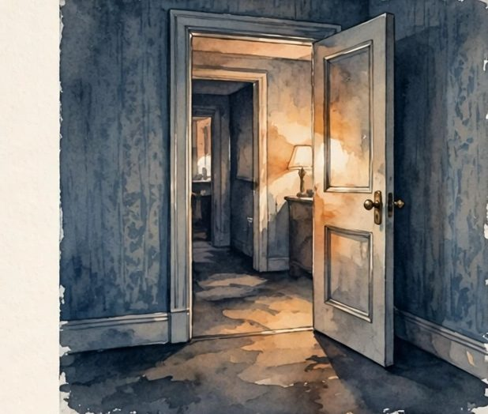
An open guest-room doorway, warm lamplight spilling into a dim hall.
There is a house at the end of an ordinary road, and in it one room is kept ready. The bed is made though nobody has written to say they are coming. The lamp is lit at dusk though the path outside is empty. The keeper of the house is not waiting in the anxious way, with an ear at the door. She is simply keeping the room the way one keeps a promise: without display, without a date circled anywhere, because the guest she is expecting is the most certain guest a house can have, and certainty does not need to hurry.
The guest is you, later. Not a stranger with your name borrowed, and not a shining figure conjured out of wishes, but the person your own life is quietly on its way to becoming. They will arrive the way all guests arrive, one ordinary day at a time, and they will find the house exactly as you left it that morning, which is why the keeping of it matters. Everything in this house is arranged around that simple courtesy: someone is coming, and the someone is not nobody, and the welcome should be ready before the knock.
Nothing here is a prediction. The keeper makes no claims about who the guest will be, what they will want, or whether the weather on their road will be kind. She only keeps the room aired, the lamp trimmed, the kettle near the stove. If you stay in these halls a while, you will find no fortunes told and no bargains offered — only the steady thought that a person is walking toward this door through the years, and that the person deserves to find a house that expected them with kindness.
2Someone Will Live Here Next
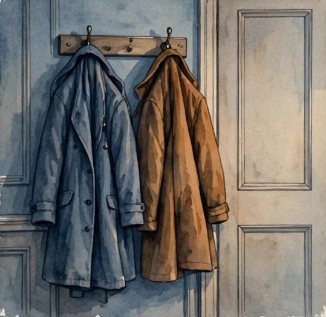
Two coats on hooks by a door, one older, one newer.
It is easy to think of a life as a single tenancy: you move in, you arrange the rooms, and that is the whole of it. The keeper suggests a gentler arithmetic. This house — this body, these habits, these shelves of half-finished intentions — will be lived in next by someone else, and that someone is already named in every deed and diary you own. It is you, at a later hour. The successor is not waiting for your permission or your departure. They are simply coming into possession, gradually, of everything you are currently holding.
Seen this way, the smallest maintenance takes on a different light. The drawer you finally sort is a drawer they will open on a difficult morning, grateful it was done by hands that were not rushed. The appointment you keep, the letter you answer, the walk you take in the rain — each is a small act of housekeeping performed for the next tenant, who is also, tenderly, yourself. Nothing grand is being asked. Only the recognition that occupation is temporary and inheritance is not, and that the two facts sit quietly at the same table.
There is no melancholy in this, or no more than there is in hanging a coat by the door for someone you love. The coats change shoulders over the years; the hook stays where it is. Whoever lives here next will wear the life you are wearing now, worn softer in some places, mended in others. Leave it as you would leave a coat for a friend coming in from the cold: clean where you could manage it, honest where you could not, and warm from having been lived in well.
3The Visitor Already on the Road
The guest is not standing still somewhere in the future, waiting for the years to begin. They are already traveling. Every day you live is a day of their road, walked at the unremarkable pace of mornings and evenings, and the distance between you is not a distance in miles but in Tuesdays. The keeper likes to say that the visitor is closer than they were at breakfast, which is not a warning. It is a description of how all arrivals actually happen: gradually, and then at the door, as if they had been expected all along.
Because they are on the road, the house relates to them the way one relates to any traveler one loves: with thoughts sent ahead. A clear path through the hall. A light left where the step is uneven. Water by the bed, because travelers arrive thirsty in ways they did not predict. None of this requires knowing the traveler's exact hour. It only requires believing the road is real and the walking is happening, which it plainly is, in your own shoes, at your own pace, through weather you get to describe in the guest book later.
And there is a kindness hidden in the arrangement that most people miss. The traveler is not coming to inspect the house. They are coming to live in it, which is a different errand entirely. A traveler who will stay does not need perfection at the door; they need the ordinary mercies in working order: a bed that has been aired, a kettle that whistles, a little evidence that the one before them thought about their comfort with affection. You are, at this moment, both the keeper of this house and the reason the road outside it exists.
4Not a Stranger, Not Yet
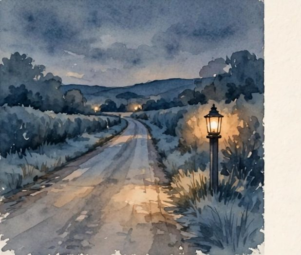
An empty road at dusk, a single lantern lit along it.
Ask the keeper whether the guest is a stranger and she will take her time answering. A stranger is someone whose face you would not know in a crowd, whose laugh means nothing to you, whose sorrows are not your business. The guest is none of that. You would know them anywhere, the way you know your own handwriting in an old notebook: instantly, and with a small start of recognition. And yet there is much about them you cannot claim to know, and the honest house leaves space for that, the way a good room leaves a chair unassigned.
They will have opinions you have not formed yet. They will reach for music you have not heard, or stopped hearing, and they may have set down some of the griefs you are still carrying like furniture. None of this makes them foreign. It makes them family in the only tense that matters here: yours, later. The hospitality this house practices is precisely the hospitality owed to someone half known and half mystery — the open door of kinship, and the closed drawer of privacy, both held at once without contradiction.
So the room is readied without being decorated to a guess. The keeper does not hang pictures of who the guest ought to be; she leaves the walls pleasantly plain and the light good for reading. Expectation, in this house, is not a portrait. It is a posture — shoulders unclenched, kettle on, an extra place at the table that does not insist on being filled in any particular shape. Whoever sits down there will be familiar. Whoever sits down there will also surprise you. The house is built to welcome both truths at once.
5The Guest Is Not an Abstraction
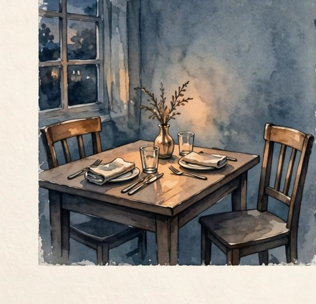
A table set for two, one chair still empty.
It is tempting to keep the future self at a comfortable distance, as an idea — a silhouette at the end of the road, useful for speeches and resolutions. The keeper will have none of it. In this house the guest is treated as a person of the most concrete kind: someone who will wake up one morning in a real body, in real light, with a real appetite for breakfast and real consequences arranged around them like furniture. Abstractions do not get tired or catch colds. This guest will do both, and deserves hosting of the practical sort.
That concreteness changes what preparation means. You cannot feed an abstraction, but you can leave the pantry of a real person stocked with a few honest things: sleep that was actually slept, friendships that were actually kept, papers that can actually be found. The guest will not live on your intentions. They will live on what is physically, financially, and affectionately in the house when they arrive. It is a bracing thought, and the keeper intends it kindly: the future is not a mood. It is a household, and households run on what was genuinely put by.
There is relief in this, too, if you let it land. A real person does not need you to be magnificent. They need the basics kept in repair by someone who was thinking of them without panic: a body treated like a home rather than a machine, a name kept honest, a small store of pleasures that do not cost anyone anything. When the guest finally sits at this table, they will not ask whether you were impressive. They will look around at the ordinary provisions and know, in the way of all travelers, whether the house had been kept by a friend.
6An Appointment You Did Not Make
Nobody remembers setting this appointment, and yet it is the one engagement no life has ever missed. You did not agree to meet your future self the way you agree to meet a friend for coffee, with a date chosen and a place named. The arrangement is older and quieter than that: it was made on your behalf by the simple fact of being alive, and it renews itself every morning without asking. The keeper keeps a chair by the door for it, not because the day is known, but because the keeping is certain.
There is something restful in an appointment you did not have to arrange. It asks nothing of your calendar and everything of your attention, which are very different currencies. You cannot be late for it, and you cannot be early; you can only be careless or considerate in how you travel toward it. The house does not mark the days off. It simply behaves, each day, as a place behaves when a guest is expected eventually: dishes done, path swept, nothing hidden in a panic at the last minute, because there is no last minute to panic in.
So the appointment stands, unmade by you and unbreakable by anyone. The guest will keep it from their side — they have no choice, any more than you did — and you will keep it from yours by the ordinary means of continuing. What remains entirely in your hands is the only part that ever mattered: the condition of the welcome. A chair by the door, a coat folded over its back, a room that does not have to apologize for itself. That is the whole ceremony, and it can be performed on any Tuesday, starting with this one.
7The One Who Inherits Your Tuesdays
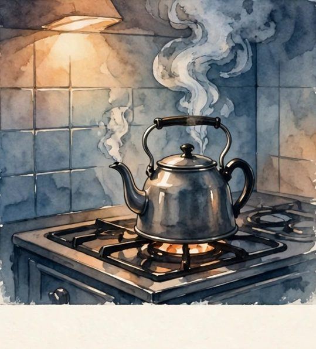
A kettle on the stove, steam rising in the lamplight.
When people imagine what they will pass on, they tend to picture the large occasions: the savings, the house, the carefully chosen words. The keeper, who has watched many inheritances change hands in this house, reports a different inventory. What the guest actually receives, in the bulk and in the weight of it, is your Tuesdays. The unremarkable days, stacked by the hundred: how they were spent, what they were spent on, whether they were given away cheaply or kept like something with value. The grand days inherit themselves. The ordinary ones are the estate.
A Tuesday is where a life keeps its real habits, because no one performs on a Tuesday. The guest will inherit the grooves worn by those days: the hour you habitually rose, the tone you habitually used, the small courtesies or small corrosions repeated until they became the climate of the house. This is not a threat; grooves can be re-cut, and Tuesday is also the day that happens, quietly, without ceremony. But it is worth knowing that the future is not built out of your best days. It is built, like most sturdy things, out of the materials nearest to hand.
So the house takes Tuesdays seriously, in a low and unanxious voice. It suggests nothing heroic: a meal eaten sitting down, a debt of attention paid before it compounds, a kindness done at the weekday scale, which is the only scale at which kindness actually accumulates. The guest will not remember most of these days individually. They will simply find, on arrival, that the house is either worn smooth by good use or worn thin by neglect, and both conditions were decided in advance, on ordinary afternoons, by the person you are being right now.
8They Know Your Handwriting
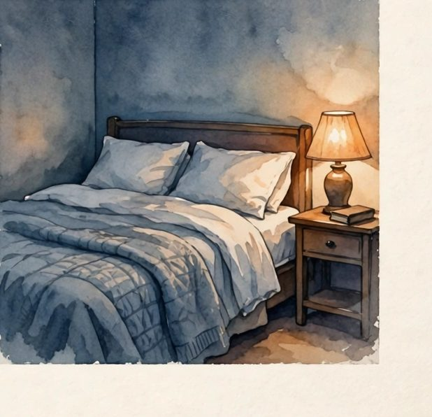
A guest bed turned down, a lamp lit beside it.
Of all the things the guest will bring with them, the keeper finds this the most tender: they will already know your handwriting. Not the handwriting of your signature, though that too, but the wider script of you — the marginal notes, the lists left on counters, the particular way you phrase a reminder to yourself. They will read your papers the way you read the letters of someone you once were: with instant recognition, and with the slight vertigo of finding your own thoughts waiting in a stranger's drawer. Familiarity, in this house, runs in both directions along the road.
This is why the keeper advises writing plainly, in every sense. A note that can be found is worth more than a system that cannot; a sentence written honestly today will still be legible when its author has become the guest. There is no need for grandeur. The guest is not a scholar of your life, decoding it from outside. They are its continuator, picking up your pen mid-sentence — and anyone would rather inherit a clear hand than a riddle. Whatever you leave written, leave it as you would leave directions for someone you love: short, true, and findable in the dark.
And there is a small mercy folded into this. Because they know your handwriting, the guest will not mistake your drafts for your verdicts. They will know which lists were wishes and which were plans, which sharp note was a bad hour and which was a considered word. They are, in the end, the one reader you will ever have who reads you from the inside. Write for that reader. It is the most forgiving audience a person gets, and the only one whose understanding is guaranteed to deepen with every year you both keep.
9The Guest Has Your Eyes
The guest has your eyes. This is meant literally first, and comfortably: the same color, the same slight asymmetry, the same way of squinting at a distance. But the keeper, who has a fondness for the literal that borders on stubbornness, points out what follows from it. Whatever you look at, you are also choosing what those eyes will be used to seeing. A person who has spent years looking carefully at things — at faces, at work, at weather — hands on eyes trained in attention. A person who has mostly looked away hands on that habit too.
It does not trouble the keeper that the guest will see differently with those eyes. Of course they will; eyes learn from what they have witnessed, and by the time the guest is using them, they will have witnessed your whole life from inside it, plus more of their own besides. The tastes behind the looking will have shifted, some coarsened by sorrow, some refined past anything you could plan for. That is not a loss of you. That is the ordinary biography of sight, and the house regards it with the same calm it brings to everything that changes by living.
What the guest cannot do is see with any other eyes. Yours are the instrument they are given, and the only preparation that matters is the care of the instrument: rest it when it is tired, point it at true things, let it look at people long enough for them to become people. The keeper keeps no portraits of the guest in this house. There is only a small mirror on the dresser, catching the evening light, in which the face is always partly the one that is coming and partly the one that is here.
10Why the House Keeps a Spare Room
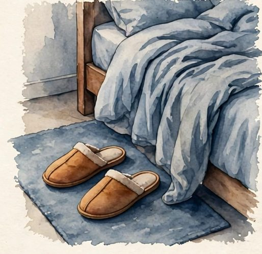
A pair of slippers waiting beside a bed.
Every house that expects a guest over many years develops the same small architecture: a room that is not quite used and not quite stored, kept in a state of quiet readiness. In this house it is the spare room, and the keeper defends it against all suggestions that it would make a better office, a better closet, a better anything. Its use is its emptiness. A spare room is a decision made in floorboards: the future will be given space here; it will not have to squeeze into whatever corner the present happened to leave over.
The principle travels well beyond floorboards. A life with nothing spare in it — no margin in the calendar, no slack in the purse, no unassigned hour in the week — is a house where the guest must sleep in the hallway. They will manage; guests of this kind always manage, since they have no other address. But there is a difference between managing and being welcomed, and the difference is almost always prepared long before the arrival, in small surrenders of present convenience that nobody applauds: the money not spent, the evening not filled, the energy not spent to the last drop.
So the house keeps its spare room swept and its slippers by the bed, not out of anxiety, but out of a cheerful doctrine: what is kept ready is kept kind. You will not know which particular readiness the guest will need. That is the nature of readiness — it is general, like hospitality itself. Leave some room in the life the way you would leave room at the table: not empty out of fear, but open out of welcome, for someone whose exact shape you are happy not to have decided in advance.
11The Future Self Is Not a Rumor
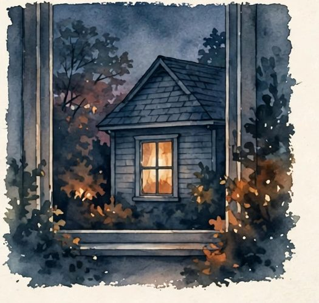
One window glowing in a dark house at dusk.
Rumors require uncertainty, and there is precious little of it here. A rumor is a thing that may or may not be coming; the future self is not in that category of things. Barring the one appointment nobody keeps, someone will be standing where you are standing, in this body or its later editions, reading this weather with your eyes. The keeper is blunt about it, in her gentle way: the guest is not a possibility to be debated at the table. They are a certainty to be cooked for. Certainty, handled well, is not a burden. It is the foundation the whole house stands on.
What remains uncertain — and the house is equally honest about this — is everything else. Their circumstances, their city, their sorrows and luck: none of that is written anywhere the keeper can read, and she does not pretend otherwise. But uncertainty about the details has never excused anyone from hospitality. You do not need to know a traveler's whole story to leave the lamp on. You need only to know that they are coming, and that part, uniquely among the things people worry about, is not in any reasonable doubt.
So the house treats the guest the way it treats the seasons: as real before they are visible. Nobody calls spring a rumor in February; they simply mend what spring will need. Plant nothing on a rumor, the keeper says, but plant freely on a certainty, and let the certainty be this modest one — that time will do what time does, and a person will be here to meet it, and that person is yours to host. The window stays lit. Not as a signal of anxiety. As a matter of fact, with curtains.
12Set the Kettle On
Every hall in this house ends somewhere practical, and the first one ends at the stove. Setting the kettle on is the smallest complete act of hospitality there is: water, heat, a vessel, and a few unhurried minutes in which nothing else is required of anyone. The keeper performs it the way other people say prayers, not because tea solves anything, but because the gesture arranges the house correctly. Someone is coming. The water will be ready. Whatever else the future holds, it will not find this kitchen cold and unconsidered.
There is a discipline in choosing the small act over the large resolution. Resolutions tend to be made in the voice of a judge and broken in the voice of a tired person; the kettle asks only for the voice of a host. You set it on for the guest in exactly the same motion you would set it on for yourself, which is rather the point — the hospitality of this house is not a performance staged for a special arrival, but the ordinary care of a home, extended across the years as naturally as across a room. Boil the water. The rest of the doctrine is commentary.
So let this be the measure you carry out of the first hall: not what you have promised, which fades, but what you have put quietly in readiness, which stays. A kettle set on. A room kept with a spare chair. A life arranged, at the level of water and light, as if the person arriving mattered. They do. And somewhere up the road, in a dusk you will recognize when you get there, the whistle will sound — and you will be, in the same instant, the one who set it on and the one who is glad it is ready.
13The House You Keep for Them
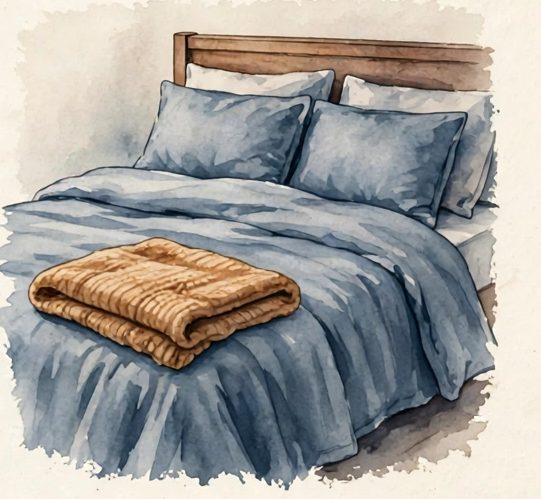
A made bed with a folded blanket at its foot.
From here the house turns from the road to the rooms themselves, and the first thing to understand is that you are already keeping it. Every life is a house kept for someone, whether the keeping is deliberate or not. The rooms are your days as they are actually arranged: the state of the body, the state of the accounts, the state of the friendships left warm or left to cool. You do not get to choose whether the guest inherits a house. You only get to choose, each day and in small denominations, what condition it is in when the key turns.
Keeping house for the guest is not the same as keeping house for inspection, and the keeper is severe on the difference. Inspection wants surfaces: shine, order, evidence of virtue. Hospitality wants function: a bed that can actually be slept in, a chair that actually holds, accounts that can actually be understood by the person who must live with them. The guest will not grade the house. They will live in it, tired, on the first night and every night after, and what they will bless or regret is never the polish. It is always the provisions.
Begin, then, where all keeping begins: with a clear look at the actual rooms. Not the house as it appears in your resolutions, and not the house as it appears in your fears, but the one with the sticking drawer and the good window, the neglected corner and the well-loved chair. That house, exactly that one, is what you are keeping for them. The work of this hall is nothing more dramatic than learning to tend it on purpose — slowly, kindly, and in the plain knowledge of who it is being tended for.
14A Room Kept Ready
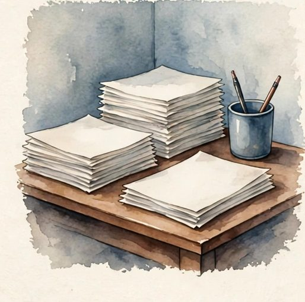
A small desk with papers in neat blank stacks.
A room kept ready is not a room kept finished, and the difference matters more than any other in this hall. Finished is a state that belongs to houses no one lives in. Ready is humbler and more useful: the bed made though the night is unscheduled, the desk clear enough to work at though the work is unknown, the path to the door passable. The keeper keeps one room of this house in that condition on principle, as a standing reminder that readiness is a habit, not an emergency measure, and that it is cheaper to maintain than to manufacture in a crisis.
The habit spreads, as habits do. A person who keeps one room ready begins to keep the calendar a little readier — an evening uncommitted, in case life sends someone who needs it. They keep the body a little readier: rested enough to be generous, fed enough to be patient. None of this is preparation for a specific event. It is the opposite: preparation for the unspecified, which is what the future, politely, always is. The guest's arrival is only the largest of a thousand small arrivals that a ready room makes easier.
And readiness, properly understood, is not tension. A room kept ready is the calmest room in the house, because nothing in it is braced. The keeper does not hover over it. She airs it, she glances in, she leaves the door standing open the width of a hand. Keep something in your life in that same unanxious condition — a little money unassigned, a little strength unspent, a little welcome unperformed — and you will have built, without any drama at all, the exact thing the guest will be most grateful to find.
15The Body Is the First Room
Before the rooms of wood and paper, there is the first room, the one the guest will enter before all others and leave after all of them are forgotten: the body. The house treats it with the seriousness due to a foundation. Whatever else you prepare — money, letters, gardens — will be received by a person who is, before anything else, a body that either slept or did not, that was fed or neglected, that was moved or left stiff in its chair. The guest's whole welcome will be filtered through that room's condition. It is the doorway every other kindness must pass through.
Keeping this room is mostly unglamorous work, and the house is unembarrassed about that. Rest taken before exhaustion rather than after collapse. Food that treats the eater as a resident rather than a machine. Movement, in whatever measure the seasons allow, taken daily like a broom to the corners. None of it is a bargain struck with the future, and the keeper forbids that framing outright: you cannot purchase a guest's good health with present virtue, and it would be a poor sort of love that tried. The care is the point. The outcomes belong to weather and luck, as they always have.
What you can do is refuse to leave the first room in a state that says nobody was thinking of its tenant. That is the whole ethic, and it fits inside an ordinary day: sleep like someone is coming, because someone is; eat like the table matters, because it does; rest without treating rest as a debt to be apologized for. The guest will arrive in this room before they see any other. Let them find it swept by simple, unshowy care — the way you would prepare the best room in the house, because that is precisely what it is.
The Guest Desk
One desk receives all correspondence for this house — questions, corrections, greetings, and word of any room you are keeping ready, any letter written forward, any kindness left where a later self will find it. It is read in the order it arrives.
16Papers Where They Can Find Them
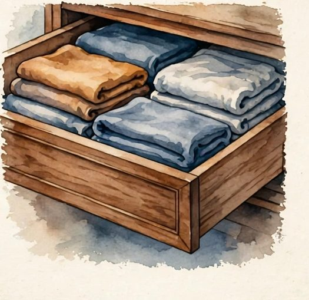
An open drawer of folded linens.
Every house has papers, and every guest, sooner or later, goes looking for them in a hurry. The keeper has a plain rule, tested over years of arrivals: a document that cannot be found might as well not exist, and a document that can be found only by its keeper is a small act of unkindness deferred. So the papers of this house live where a tired person, in poor light, under some pressure, could lay a hand on them — the deed, the will, the accounts, the instructions for the stubborn boiler. Order here is not tidiness. It is a message sent ahead through time: I thought of you, in this drawer, on this ordinary afternoon.
The work is smaller than people fear. It does not require a system with a name, or a cabinet with a key, or an afternoon of penance among the files. It requires, mostly, that things be put in the obvious place and that the obvious place be written down somewhere a second pair of eyes can find. The guest's eyes, remember, are your eyes, later and wearier; they will search with your habits and your blind spots, and they will bless every label you bothered to write and every stack you bothered to make findable. The mercy is in the labeling.
There is a deeper comfort under the practical one, and the house does not hide it. To put the papers in order is to admit, in writing, that the house will be handed over — that you are a keeper and not an owner, a chapter and not the whole book. People resist the drawer for exactly that reason, and the keeper answers them gently: the drawer is not a rehearsal for an ending. It is a courtesy for a continuation. The guest will open it in the middle of their own full life, and find, folded among the documents, the evidence that they were expected and provided for.
17Money Left in the Drawer, Honestly
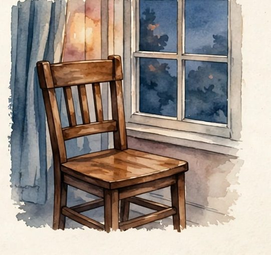
A sturdy wooden chair beside a window.
In the drawer of this house there is money, and the keeper's rule about it is a single word: honestly. Not abundantly — abundance is weather, and no host controls it. Not cleverly, either; cleverness in accounts tends to read, a few years on, like a riddle set by someone who did not trust the reader. Honestly means the figures are the figures: what there is, what is owed, what is promised, written down in a hand the guest can read without needing to forgive the arithmetic first. The guest will inherit the money either way. The honesty is the part that is up to you.
This matters more than the amounts, and the house is firm about it, because people tend to reverse the two. A modest sum left clearly is a gift outright; a larger one left in confusion is a task disguised as a gift, and the guest will spend their first season in the house untangling what could have been written on one honest page. Pride hates the honest page when the numbers are small. Shame hates it when the numbers are tangled. The keeper ignores both and reaches for the pen: here is what there is. Here is what it is for. Here is what I do not know.
Notice, too, what the honest drawer refuses to do: it does not apologize. Money left honestly is money left as a fact, not as a verdict on the life that produced it, and the guest — who knows your handwriting, and your Tuesdays, and what the years cost — is the last person who will need an apology stapled to the accounts. Leave the drawer honest and the conscience out of it. That combination, rare as it is, is the closest thing to wealth this house has ever defined: the truth, findable, with the light on.
18The Chair That Still Holds
The keeper's favorite piece of furniture in the house is not beautiful, and she will tell you so while dusting it. It is a chair: plain wood, one repair to its name, and the quality she values above all others in a thing — it still holds. It held the last guest who sat in it, and the one before that, through long evenings and ordinary ones, and it gives no sign of reconsidering. In a house arranged around an arrival, the chair is the keeper's quiet argument that reliability, maintained over years, is worth more than splendor maintained over none.
Most of what the guest will depend on is like the chair: unremarkable, load-bearing, and entirely the product of small maintenance done before it was urgent. The friendship written back to, the skill practiced in the off-season, the roof seen to in the dry months — none of these announce themselves as the supports of a life until the weight comes on them, at which point their whole history of quiet care is revealed in a single moment: they hold, or they were never really kept. The house prefers its spending done in advance, in twine and oil and attention, rather than afterward, in regret.
So take the inventory the way the keeper takes it, sitting down. What in your life is asked to hold weight — your body, your word, your few deep friendships, your craft — and when was each last actually tended, rather than merely assumed sound? The guest will test all of them, not out of malice but out of need, the way every arrival tests the furniture by the simple act of sitting. Leave them chairs that hold. It is the plainest sentence in the whole doctrine, and the keeper will stand by it, and so, she notes, will the chair.
19Debts Named, Not Hidden
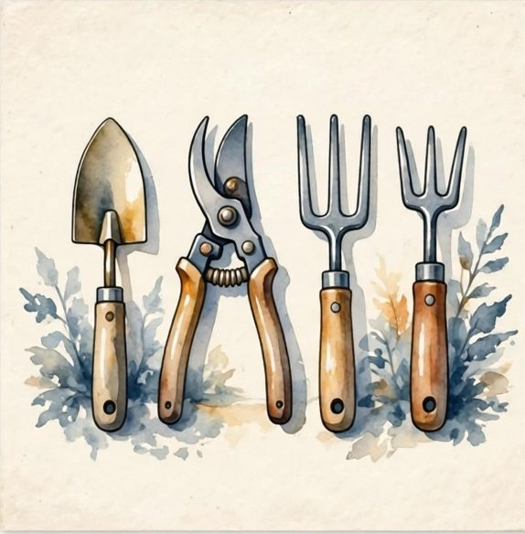
Garden tools laid out in a careful row.
The house keeps its debts the way it keeps its tools: in the open, named, and in their proper row. A debt hidden is a debt doubled, the keeper says, because it accrues a second interest in worry and a third in surprise, and the guest — who will inherit the row whether it is tidy or not — deserves to find it laid out honestly rather than buried in the garden. Naming a debt does not pay it. What naming does is convert it from a haunting into an item, and items can be carried, scheduled, and someday set down. Hauntings just accumulate.
There are debts here of every denomination, and the house is democratic about them. The money owed, certainly, written down with its figures plain. But also the letter owed, the apology owed, the thanks owed for years and never sent — the small arrears of the heart that everyone carries and few inventory. Each, named, becomes a thing a person can act on. Each, hidden — even from oneself, especially from oneself — becomes a draft in the house, a cold spot the guest will find and misread as their own failure to be warm. Name them kindly and name them early, in the voice of a host, not a prosecutor.
What the guest does with the named debts is, in the end, the guest's affair; some they will pay with gratitude for the clarity, some they will renegotiate with a life you cannot foresee, some they may simply forgive themselves for, which is also a form of settlement. Your part ends at the naming, and it is a larger part than it looks. A row of tools laid out in daylight, handles clean, edges visible: that is what honesty looks like from the doorway. The guest comes in, sees it, and understands the house in a single glance — this place hides nothing from me. Neither, the keeper adds, should you.
20The Garden You Will Not Finish
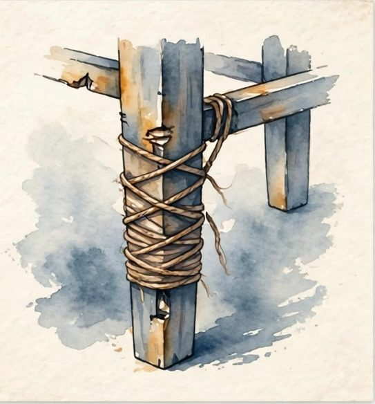
A mended chair leg bound with twine.
At the back of the house there is a garden, and the keeper tends it under a rule that visitors find either obvious or unbearable: you will not finish it. The beds you dig will be re-dug by later hands. The tree you plant will be pruned, in years you will not see, by someone whose idea of its shape may not be yours. This is not the garden failing at its purpose. It is the garden stating it. A garden is the one part of a house that openly admits it belongs to more than one lifetime, and the guest, when they arrive, will step into it mid-sentence, the way into everything else you are keeping.
Planting under that rule is a discipline of release. You put in the slow things — the tree, the hedge, the bed that takes three seasons to come right — without demanding to be present at their maturity, and you plant the quick things too, the annual brightnesses, because the guest deserves flowers in their first summer and not only promises. What you do not do is leave the soil exhausted and call it humility. The gardener's version of honesty is to hand over ground that has been fed, beds whose edges are findable, and a rough map of what was put where, drawn kindly for eyes that were not there at the planting.
The guest, for their part, will do the same to the gardener after them; the chain of unfinished gardens is simply what a kept place looks like across time. There is real consolation in joining it deliberately. Your hands are in this soil for a while — long enough to matter, briefly enough to require grace. Work the garden as a host works: for the pleasure of the ones who will sit in it, in a shade they did not plant and will not have to thank anyone for, because the thanking, like the shade, will have become part of the place itself.
21Tools Left Sharp
Among the things the guest will need, the keeper ranks one unexpectedly high: edges. A tool left sharp is a kindness measured in the next person's hours. The knife that cuts clean, the skill that has been kept in practice, the knowledge written down while it was still fresh — each spares the one who comes after the dull labor of working with whatever was allowed to go blunt. Neglect rarely announces itself as cruelty. It announces itself as friction, a hundred small resistances in a day, each one quietly taxing the person you were supposed to be hosting.
Sharpening is unglamorous and, worse, it is never finished, which is exactly why the house honors it. A blade is not sharpened once and for all; neither is a language, a craft, a memory for names, a body's strength. They are kept, or they go, at the pace of days. The keeper keeps her whetstone by the sink where she will see it, because she knows the truth about maintenance: it happens where it is convenient or it does not happen at all. Leave the means of sharpening where the guest will find them too. A person can re-edge almost anything if the stone is in the house.
There is a courtesy hidden in this hall's plainest chore. To leave tools sharp is to say to the guest: your time will matter. I did not spend it for you in advance, on dull work I could have prevented. The guest will have their own labors, large enough without inheriting your friction. So oil what rusts, practice what fades, write down what only you currently know. It will never be finished, and it does not need to be. It needs only to be visibly, presently, the habit of the house — a habit the guest, finding the edges keen, will recognize as love in its working clothes.
22The Bed Made in Advance
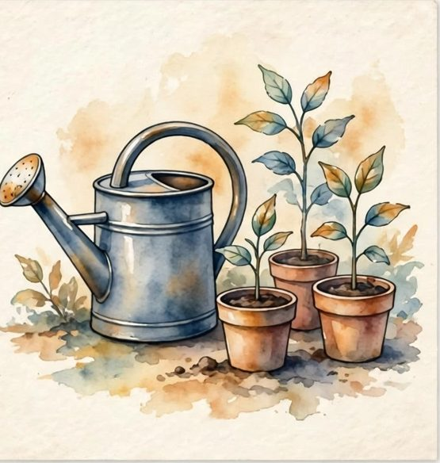
A watering can beside young plants.
The bed in the guest room is made in advance, and the keeper will explain, if pressed, that she is not being fanciful. She is stating the house's position on rest: it is prepared, not collapsed into. A bed made in advance is a decision taken in daylight on behalf of a person who will arrive tired — which is to say, on behalf of the truth about all arrivals. Nobody reaches the end of a long road, or a long year, or a long life-stage, with the strength to make their own welcome from scratch. The welcome must be waiting, folded back, the pillow already plumped by earlier and kinder hands.
Sleep is the form this takes most often, and the house treats it accordingly: not as the change left over after living, but as part of the provisioning. The guest will spend a third of their inheritance asleep, and the quality of that third will color all the rest — their patience, their judgment, their capacity to be glad. To guard your own rest now, plainly and without apology, is to lay in stores for them as surely as stocking a pantry. The keeper airs the guest-room bedding on fine days even when no arrival is expected. Some forms of care only look like idleness from outside.
And the made bed makes one more argument, quietly, at the end of the hall: that rest is not a reward the guest must earn by arriving impressive. It is laid out before they come, unconditionally, the way the lamp is lit and the kettle set on. Whatever road they have walked, whatever shape it has left them in, the first thing this house offers is not a question but a bed. Make yours the same, and make it early. Hospitality that waits for the knock to begin is not hospitality at all. It is housekeeping with an audience.
23What a Good Host Repairs Early
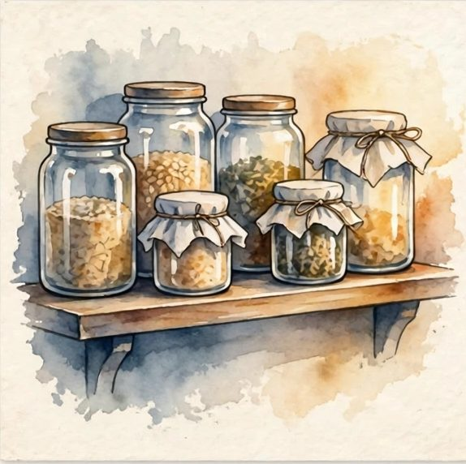
A shelf of glass jars in warm light.
Asked what a good host repairs early, the keeper does not hesitate: the small things, while they are still small. The drip before it is a stain, the tread before it is a fall, the misunderstanding before it is a feud. A house teaches its keeper to read scale, because almost everything that eventually overwhelms a household begins as a noise too minor to mention. The guest will inherit your repairs and your postponements in equal measure, and they will be able to tell, within a week of arriving, which of the two you practiced. Early repair is not fussiness. It is mercy with a wrench.
The list of small things is longer than the plumbing, and the house knows it. The apology made while it is still easy to pronounce. The symptom mentioned to a doctor while it is still a symptom. The boundary drawn kindly while the friendship can still bear it. Each of these is the same repair at different addresses: a fault caught in its cheap season. Left alone, faults do not stay the same size out of loyalty. They grow at the rate of their own kind, and the bill is always presented, in the end, to whoever is living in the house then. That will not be you. That is rather the point of repairing early.
None of this requires a temperament for perfection, which the house neither has nor admires. The keeper's own list of pending repairs is long, and some entries on it are old enough to have become features. What early repair requires is only a bias: toward the wrench over the worry, toward the phone call over the rehearsal of the phone call. Do one small repair while it is still small, today, in the plain knowledge of whose house it keeps. The guest may never know it happened. That is the finest kind of inheritance there is — the disaster that, thanks to you, never made it into their story.
24The House Is a Letter Too
Stand across the road at dusk and look at the house, and you are reading it. The lit window, the swept step, the curtain drawn or open — before a word is exchanged, the place has already said a great deal about the one who keeps it and the welcome a traveler might expect. The keeper takes this seriously and without vanity: the house is a letter too, written continuously, in the only script that cannot be revised after sending. Its readers will include neighbors, strangers, and — at the end of the road, reading most carefully of all — the guest, who will learn the place as a text before they ever sit down in it.
Every keeper writes this letter whether they mean to or not; the only choice is whether it is written on purpose. A house kept with visible care tells the arriving guest that thought preceded them. A house left to broadcast neglect tells them the same thing, in reverse, no matter what the spoken welcome claims. This is why the keeper attends to the small legibilities: the path clear enough to walk at night, the door that opens without a struggle, the name written somewhere findable. These are sentences. The guest will read them in the first five minutes, in the tired hour when sentences matter most, and believe them more than anything said afterward.
And there is a final sense in which the house is a letter, the tenderest of the three: it is read backward. Long after the keeping is done, the guest will walk its rooms reading evidence of the keeper — the mended chair, the honest drawer, the garden planted past one lifetime — the way you read the letters of someone whose hand you loved. Write it, then, as you would write to be read by a friend in a later year: legibly, kindly, and without hiding the repairs. The repairs, in the end, are the most affectionate sentences in the whole correspondence.
25Letters Forward
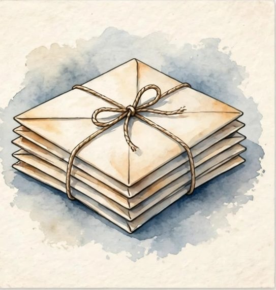
A stack of sealed blank envelopes tied with string.
The house keeps a second kind of correspondence, and this hall is devoted to it: letters written forward. Not letters to the world, and not the notes and lists of ordinary keeping, but deliberate pages addressed to the guest — to the person who will live here after the writing hand has become their own earlier chapter. The keeper keeps a stack of envelopes tied with string for the purpose, and she regards the practice as the most natural thing in the house. Of course you would write. You write to everyone else you love who is far away. This guest is only far away in the one direction nobody thinks to post to.
A letter forward is not a message in a bottle, and it is not a voice from beyond anything. It is more ordinary and more powerful than either: one tenant of the house telling the next tenant what the place is like. Where the step creaks. What the light does in October. Which of the worries turned out to be weather and which turned out to be climate. The guest, arriving, will be rich in everything except context; they will have the consequences of your life without the years of explanation that produced them. The letter is where the explanation lives, in your hand, in your voice, unhurried.
Do not wait for an occasion worthy of an envelope. The keeper is brisk on this point: the letters that matter in this house were almost all written on unremarkable days, because unremarkable days are when the truth is lying around loose and honest. A page is enough. A paragraph is enough. What the guest needs from you is not completeness — they have a whole life of their own for that — but company: the discovery, made in some future evening's lamplight, that the person who kept the house before them was thinking of them, and bothered to say so in ink.
26How to Address a Letter to Yourself, Later
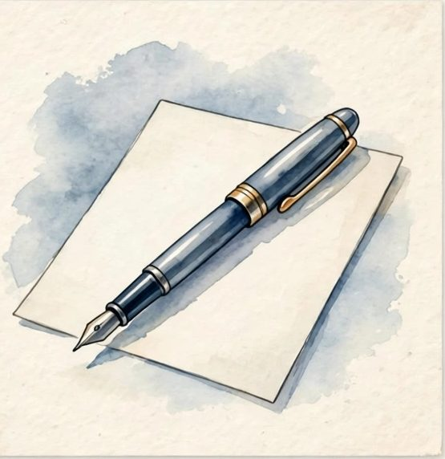
A fountain pen resting on blank paper.
The first difficulty of a letter forward is the envelope: how do you address someone who has no address but yours, no name but the one you are currently using? The keeper, who has sealed many of these, offers the house's solution with the air of someone setting down a heavy parcel. You address it the way you would address a letter to a friend traveling without an itinerary: by relationship, not by location. To the one who lives here next. To the keeper after me. To you, later — which sounds informal, and is, and is also the most accurate address the future has ever accepted.
There is no need to guess at a title for them, and the house advises against inventing one. You do not know whether they will want to be congratulated or consoled at the moment of reading, whether the envelope will be opened in a good year or a hard one, and the address should leave room for both. That is the genius of the plain direction: it assumes nothing except continuity. Whoever opens it will be the right person, because there is only one person it could be — the one who came after, holding your handwriting, in your house, at whatever hour the road delivered them.
And do not be discouraged by the strangeness of the first line. Every correspondence in this house began awkwardly; even the keeper's earliest letters forward creak a little at the hinges. What carries a letter is not polish but postage — the fact that it was actually written, actually sealed, actually left where the right hands would find it. Address it plainly, date it honestly, and let the relationship do the rest. Years from now, someone will turn the envelope over in lamplight and feel, before they read a word, the thing the address was carrying all along: I knew you would come, and I wrote anyway.
27What to Tell Them First
What do you tell them first? Not the warnings — those have their page, later, in gentler ink. Not the accounts, which are the drawer's business and will keep. The keeper says the first thing a letter forward should carry is the news that they were thought of, at all, by a person who had never met them and owed them nothing enforceable. It sounds like a small opening. It is, in fact, the whole letter in seed form. Everything else — the advice, the history, the jokes — is an elaboration of that one astonishment: across an unbridgeable stretch of years, somebody in this house was on their side in advance.
After that, tell them where things stand, briefly and truly, the way you would brief a beloved successor at a handover you both knew was coming. What the house is like just now. What you are in the middle of. What the season is. The guest will have plenty of records of what happened; what they cannot recover, from any archive, is what it felt like to stand where you are standing — the texture of the present before it hardened into their past. That texture is the letter's unique cargo. It cannot be reconstructed later by anyone, including them, which is precisely why it is worth a paragraph now.
Keep the first letter short, the keeper advises, against every instinct of the heart. Length is not love here; findability is love, and a short letter left in the right place outranks a long one left in the imagination. One page: I thought of you. Here is where we are. Here is one thing I hope you still have, and one thing I hope you have set down. Sign it the way you sign everything else, in your ordinary hand. The guest knows your handwriting. They will take it from there, the way all good letters are taken up — as the start of a conversation, not the whole of one.
28The News They Already Know
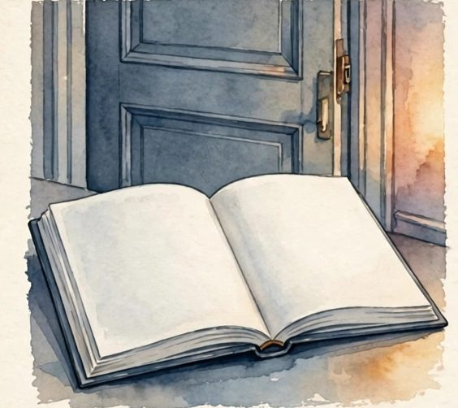
An open guest book, its pages blank, by a door.
There is one subject the letter forward cannot inform the guest about, and the house finds this funnier the longer it considers it: the news. Whatever has happened by the time the letter is opened will be old information to its reader — they will have lived through the outcomes, the verdicts, the scores of games whose first halves kept you awake. Writing to tell them what comes next is like posting weather reports to next month. They know. They were there, in the only tense that includes the results, and any letter that pretends otherwise will read, in their hands, as a letter written to a stranger.
But this limitation, properly seen, is the letter's liberation. Freed from reporting, the letter can do the one thing no other document in the house can do: it can tell the guest what the news felt like before it was news. The uncertainty, entire and unedited. The hope, before it learned whether it was warranted. The fear, at full size, before time shrank it to an anecdote. The guest will have forgotten most of that — outcomes have a way of repainting the road that led to them — and your letter, written inside the not-knowing, preserves the one thing their memory will have edited out: the truth that it was genuinely undecided, and you lived it anyway.
So write from inside the fog, and do not apologize for the fog. Here is what we do not know yet. Here is what we are hoping, with our fingers crossed like children. Here is what the house is afraid of this winter, written down while the fear is still honest. The guest, reading, will smile at some of it and go quiet at some of it, and both responses are forms of company. A letter that knows its reader already knows the ending is a letter with nothing left to perform. It can simply sit down beside them, a voice from the far side of the river they have already crossed, saying: I remember when this was all still ahead of us. Wasn't it something, not knowing.
29Warnings, Gently Worded
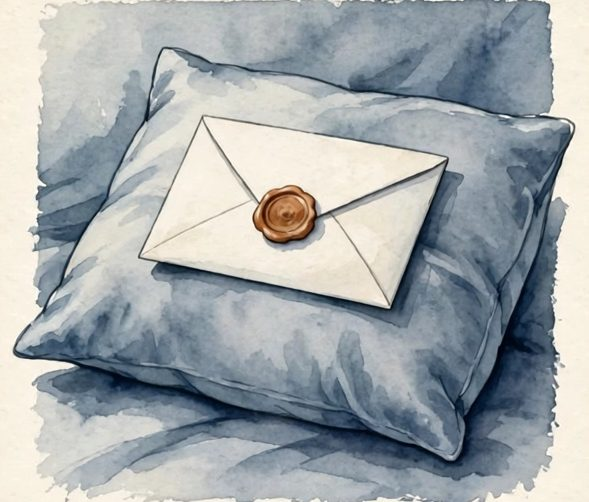
A sealed letter resting on a pillow.
Every keeper of this house has written warnings, and every honest one has written them twice: once in the first heat, when the words came out like alarms, and once later, in the ink this hall recommends. A warning is a strange gift to send forward. Sent badly, it arrives as a curse — a voice from the past flinching at the future's choices, trying to steer a life it will not have to live. Sent well, it arrives as a lantern left at a known bend in the road: not a command to stop, but a mark where the footing, in one person's experience, once gave way.
The house's rule for wording them is simple enough to write on the envelope: warn about the ditch, not about the driver. The ditch is real information — the habit that compounds quietly, the friendship that costs more than it says, the tiredness that lies about what matters. The driver is the guest themselves, and they do not need your flinching packaged as prophecy. They will make their own errors, some of them improved versions of yours, and a warning worded with respect leaves them free to heed it, test it, or set it down with thanks. All three are successful deliveries.
And keep the warnings few. A letter that warns about everything warns about nothing; it becomes the weather report of an anxious climate, and the guest learns to read past it the way one reads past rain. Choose the two or three bends in the road where your own footing truly went, and mark those with care, in your calmest hand, with dates. The guest, meeting one of them some evening in their own years, will feel the small shock of recognition the best warnings produce — not I was told how to live, but someone stood here before me, and thought to leave a light.
30What Not to Apologize For
Among the letters this house does not send are the apologies addressed forward, and the keeper is particular about why. There is much you might be tempted to beg the guest's pardon for: the years you did not know what you were doing, the care you took too late, the chances that went by while you were looking the other way. It sounds like honesty. Examined in daylight, it is something else — a request that the guest begin their tenancy by comforting the previous tenant. The house declines to post it. Your regrets are your own luggage; carry them to their destination yourself, and do not forward them COD to the one person who cannot refuse the delivery.
This is not a ban on truthfulness. A letter may record, plainly, what was done badly and what it cost; the guest deserves the facts, and facts are ballast, not burden. What the house forbids is the posture — the letter that lingers, that circles, that asks in every paragraph to be reassured by a reader who has enough to carry. The guest, remember, is not your judge, and casting them as your absolver is only the same error in a softer costume. They did not come to grade you, in either direction. They came to live in the house, and the kindest thing a predecessor can leave is a house whose emotional accounts are as honestly settled as its financial ones.
So if an apology must be made, make it in the present tense, to the people it actually belongs to, while the making can still do some good. What you owe the guest is different and simpler: a clean desk, a true record, and a welcome unclouded by your unfinished business with yourself. The chair by that desk is pulled back and empty, nothing owed upon it. Leave it that way. Of all the inheritances in this house, an unburdened arrival may be the one the guest mentions, years later, when they describe what the keeper before them was like.
The Guest Desk
One desk receives all correspondence for this house — questions, corrections, greetings, and word of any room you are keeping ready, any letter written forward, any kindness left where a later self will find it. It is read in the order it arrives.
31Thanks, Owed in Both Directions
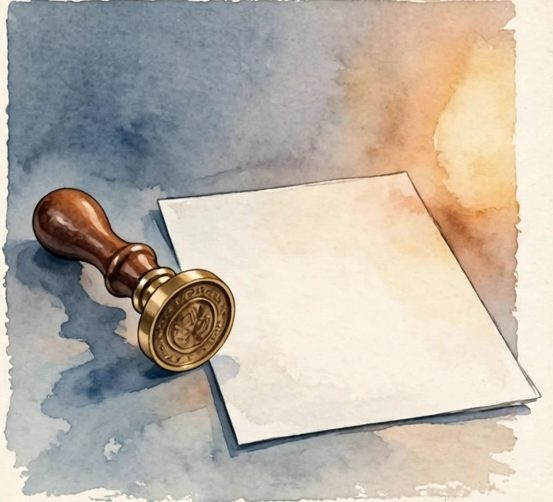
A wax-seal stamp beside blank paper in lamplight.
Of all the letters in this house, the keeper values one kind above the sealed warnings and the honest reports, and it is the kind almost nobody remembers to write: thanks. The guest is usually imagined as the beneficiary of the correspondence, the one who receives. But every keeper knows the traffic runs both ways along the road, and a letter forward that carries only instructions is a letter that has forgotten half its errand. You owe the guest thanks, plainly, for something most people never think to be thanked for: they are coming. They will carry the house, the name, the story, past the point where your own strength gives out. That is not a small service.
And the thanks are owed in the other direction too, into this very room, from the guest you will become toward the selves who kept the house before you could spell the word — though that letter, of course, must be written by them, later, in their own hand. What you can do from your side is begin the custom. Gratitude, in this house, is treated as a utility, like water: it should flow in both directions along the pipe, or the system is only half installed. The guest who finds thanks waiting in an envelope will learn, from the finding, to send some back down the years. That is how the house stays warm.
So write it plainly, without ceremony: thank you for coming. Thank you for the years of mine you will look after when they are only memories to everyone else. Thank you for the repairs I will never see, for the kindnesses you will do in my name's later chapters, for reading this at all. It is a strange letter to write and a stranger one to receive, and both strangenesses are the good kind. Seal it with the others. Some evening, in a year you will not witness, a person at your own table will break that seal and discover they were thanked in advance for their whole life. Few inheritances travel better than that.
32The Letter You Seal for a Hard Year
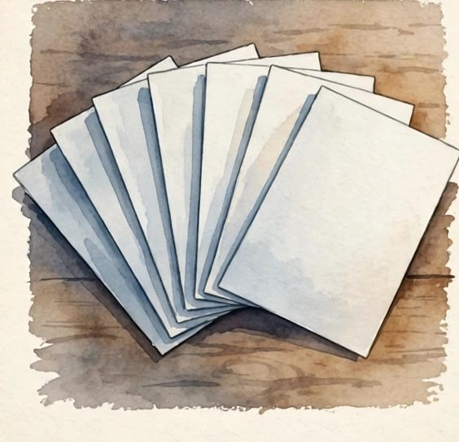
Blank postcards fanned across a table.
There is one envelope in the keeper's stack that is heavier than the rest, though it holds a single page. It is the letter sealed for a hard year — written now, in a season of relative strength, addressed to the guest at the moment they will most need company and least be able to ask for it. Every house that has stood long enough knows such years exist. Not their dates, not their causes; the house makes no predictions. Only the simple actuarial truth that the road has winters, and that a traveler who has crossed one already is in a position to leave a light burning at the inn for the next crossing.
Write it from where you are, which the keeper insists is the only qualification required. You do not need to have survived the guest's particular hard year — you cannot, it has not been assigned yet. You need only to have survived your own, and to remember, in ink, what would have helped and what actually did. Not advice at scale; the letter is too short and the year too long. Just the small true things: that it ended, that the house stood, that help came from an unregarded direction, that you were wrong about being finished. Hard years are liars, and the letter's whole job is to be one document in the house that is not lying.
Then seal it and write the instruction plainly on the envelope: for the hard year, whenever it comes. Do not specify. The guest will know — that is the one thing about the future this house is willing to guarantee, because it is not a prediction but a recognition. Some evening they will take the envelope down with hands that are not steady, and they will find, in the middle of the worst of it, a voice from an easier year that is neither surprised nor afraid. It is yours. You sent it ahead, like water and firewood, to a winter you could not see. That is what the keeping of this house finally means.
33Postcards from the Present
Not every message forward needs an envelope, a seal, and a solemn afternoon. The house also keeps postcards — brief, unsealed, written in the margin of an ordinary day and left where the days accumulate. A line in the front of a book. A note in the recipe hand, between the soup and the bread. A card in the coat pocket that will be found, some colder year, by hands looking for gloves. The keeper is fond of these out of proportion to their size, because they carry the one thing the formal letters cannot: the sound of a voice that was not performing, not even for posterity.
A postcard from the present has a discipline of its own, and it is mostly a discipline of restraint. It does not explain; it reports. The light on the hill this evening. The price of plums, and that they were good. The song that has been stuck in the house's head for a week. Such fragments look trivial in the writing and turn out, in the reading, to be the most precious documents in the house — because the guest, who will have lost the present entirely by the time they arrive, cannot recover it any other way. Grand events leave records everywhere. It is the texture of the ordinary that evaporates, and the postcard is a net woven exactly fine enough to catch it.
So keep a small stack of cards where you live, and lower the threshold until sending one costs less than a minute. The guest is not a correspondent who requires occasions. They are the future reader of your whole life, and like all readers, they will treasure most the passages their author dashed off without knowing they were literature. Write the plum prices down. The future is farther away than it looks, and somebody is going to be homesick for exactly this, some night, in a house that used to be yours and is now, in the friendliest sense, theirs.
34The Guest Book by the Door
An inkwell and quill in lamplight.
By the door of this house, where every arrival is registered, stands the guest book: a plain volume, ruled and dated, in which the keeper records the days. Not the events — the days have their own archives elsewhere — but the occupancy. Who was here, in this body, in this season of the house, and what the weather of their being was. It is the simplest book in the building and, the keeper believes, the one the guest will read first, before the letters, before the accounts, because it answers the question every successor asks of every predecessor: what was it actually like to live here, in your watch of the house?
The entries are short, and their brevity is the discipline. A line for the day, in the hand of the day, not edited by the day after. Slept badly; the garden forgave us. Finished the repair; the house feels quieter. Thought of the guest today, for no reason, and set the kettle on. The guest, reading, will do what all readers of such books do: they will scan for the great days and find instead a long, ordinary register of weather and mood, and they will be steadied by it — because their own register, kept at that same door, will be ordinary in exactly the same proportions, and they will know they have kept the house correctly.
Keep the book by your own door, then, wherever your door is: a notebook, a margin, a file that only you will inherit. The point is not the medium but the standing habit of signing in to your own life, briefly and honestly, as its current keeper. One day the hand that turns those pages will be the guest's, and the entries will read the way the entries in old inns read — as proof that the house was lived in by a person, attentively, one unremarkable and irreplaceable day at a time. There is no better introduction you can leave for the one who comes next. You are, after all, the only witness they will ever have.
35A Letter Is a Room with a Lock
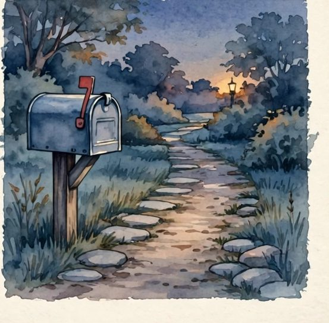
A mailbox at the end of a path at dusk.
The last letter in this hall is the one that is never opened by its writer, and the keeper asks you to notice what kind of object that makes it. A letter is a room with a lock. Inside it, a voice can say things at the temperature they were felt, and the seal holds that temperature across the years better than any memory can. Memory revises; it cannot help itself, it is made of the reviser. Ink does not. The page the guest unfolds will say what you said, in the words you chose, on the date you wrote at the top — a small, sealed room in which your present self is waiting, exactly as left, to be visited.
This is why the house takes sealing seriously as a kindness and not a ceremony. To seal a letter is to promise the guest a self that has not been edited by hindsight — and to promise yourself, equally, that you will not wander back and tidy the feelings into something more presentable. Some of what you write forward should stay raw enough to be believed. The guest has plenty of polished documents. What they cannot get anywhere else is you, unrevised, mid-life, mid-doubt, mid-hope, saying it the way it actually sounded from inside the year it was. The lock on the room is what guarantees the honesty of what is inside it.
Leave some letters sealed, then, and trust the mechanism. Write them, close them, mark them plainly, and let them alone with a discipline that will sometimes itch. A house in which every room stands open is not hospitable; it is draughty. The guest deserves a few doors that open only in their own time, onto rooms kept exactly as the keeper left them. When the seal breaks, years from now, the air that comes out will be the air of this year, unbreathed since. There are not many gifts that can be given across that distance. This one can, and the giving costs an envelope, a page, and the restraint not to improve it later.
36Write It While the Ink Is Honest
The hall of letters closes with the keeper's most practical instruction, delivered without ceremony: write it now, while the ink is honest. Ink, in this house, is a word for the condition of the teller. There are hours when a person writes from inside the truth of a thing — while the feeling is still at its real temperature, while the details have not yet been sanded by retelling — and there are later hours when the same person, meaning no harm, writes the official version. The guest can obtain the official version from any archive. The unedited one exists only in the narrow window when the ink is wet, and windows, as every keeper knows, do not stay open.
This is not an argument for haste; the house is against haste in almost all its forms. It is an argument against postponement dressed as thoroughness. The letter deferred until you understand the year will be written by someone who has survived the year and forgotten its weather — a wiser correspondent, perhaps, and a far less accurate one. The guest does not need your conclusions. Conclusions are the one thing they will manufacture in bulk, having lived the outcomes. What they need, and can only get from you, is the dispatch from inside the undecided moment, filed before the ending was known. Write it while you still do not know. That ignorance, recorded honestly, is a form of gold.
So the keeper keeps the pen where the living happens, and the paper beside it unruled and unthreatening, and she writes in the evenings while the day is still legible. Some of it will embarrass the writer later; that is understood, and it is beside the point, because the reader is the one person entitled to the unembarrassing truth that embarrassment usually guards. Date it, seal what should be sealed, leave what should be left open, and let the ink dry where it falls. Years on, a hand you know better than your own will turn the page and find you still in the room — mid-sentence, mid-life, telling it straight. That is the whole correspondence, and it starts tonight.
37The Table for Two
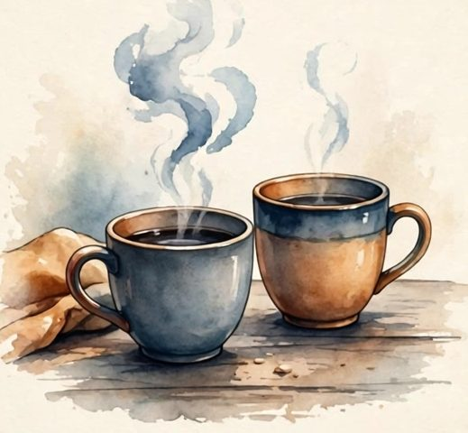
Two cups on a table, steam rising from one.
Every house of any size has a room where the important conversations happen, and in this house it is not the study or the doorstep. It is the table, set for two. The keeper sets it the way she sets everything else in this building: without knowing the date of the meal. Two cups. Two chairs. A teapot with enough in it for a long talk. The fiction of the place is that the guest might sit down across from you, in the ordinary way of guests, and that the two of you — the keeper of the house as it is, the keeper of the house as it will be — might finally have the conversation that the years keep postponing.
There is no magic in the setting, and the house would like that noted. The guest will not materialize over tea; the chairs will hold, as chairs do, only the person who sits in them now. The table for two is a discipline of imagination, not an appointment with a spirit. But imagination, used steadily, changes the person using it. To sit down, even in thought, across from the one who will inherit your life is to become answerable in a new and strangely gentle way — not to a judge, never to a judge, but to a companion. The questions across a table are different from the questions across a courtroom. They are the questions of someone who has to live with your answers.
So the hall begins with the setting itself, and asks nothing further of you yet. Lay the second cup out, in your mind or on the actual table, the next time you sit down to decide something with a long shadow. Notice how the deciding changes when there is company. That change — that small, civilizing pause — is the whole reason the table is here. The guest, being you, deserves a seat in the deliberations of the house. This hall is where they get one, conversation by imagined conversation, until the habit of consulting them is as ordinary as tea.
38The Questions You Would Ask Them
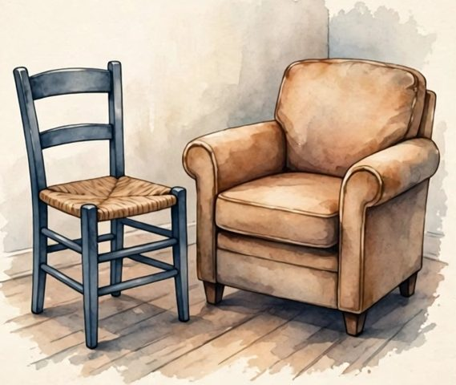
Two unlike chairs facing each other.
The first exercise of the table is a list, and the keeper suggests you make it honestly: what would you ask them? Not the mercenary questions — the house has a door, and it is shut to those. Not which horse, which stock, which door to have locked on which night; the guest is not an oracle and the table is not a booth for buying outcomes. The questions that belong here are the ones only they can answer and only you would think to ask, the questions of a keeper handing over a house: did the garden outlast us? Is the chair by the window still the best seat? Are you, on the whole, glad of how it was kept?
Under the household questions, of course, the larger ones are sitting quietly, the way larger questions do. Whether the work mattered. Whether the people are well. Whether the fears that currently run the house like unpaid staff ever amounted to anything, or whether they were, as the keeper suspects of most fears, weather impersonating climate. You will notice that none of these can be answered in advance, and the house regards that as their qualification, not their flaw. A question that could be answered now would not need the guest. These are questions to live toward — compass points for the keeping, asked regularly, answered once, at the table, in their own good time.
Keep the list where the table can see it. Add to it as the years instruct you; strike from it what life answers early, in its own voice. And notice, somewhere along the keeping of it, the change the list works in its keeper: a person carrying good questions about their own future stops needing that future to be impressive and starts needing it to be inhabited — by someone well, someone at peace in the house, someone who can be asked these things over tea and not flinch. The questions are not really requests for information. They are the shape of your care, written in the interrogative, and the guest will feel every one of them as exactly that.
39The Questions They Would Ask You
The keeper, who has presided over this table in imagination for years, reports that the traffic is not one-way. The guest has questions too, and they are not the questions you would predict. They are not, mostly, about the outcomes — the guest knows the outcomes, having lived them; asking you about the future would be as pointless for them as asking them about the past is for you. Their questions face the other way, into the part of the record only you can testify about: the present, which by their time has become the one country no archive can fully reconstruct. They lean across the table, the keeper says, with the eagerness of a reader who has finished the book and wants to interview the only witness.
And what do they ask? Small things, at first, in the manner of all real curiosity. What did the house smell like in the morning, that year. What were you so worried about that winter — no, really, what was the texture of it, because from here it looks so small. Why did you keep the chipped cup. Who taught you to make the soup that way, and did you ever, even once, write it down. It is a humbling list for the keeper of grand intentions. The guest is not auditing the estate. They are homesick for a country they are made of, and every detail you failed to record is a road in it that no longer exists on any map.
Deeper in, their questions turn — gently, the keeper promises, but they turn. Did you know, they ask, how much of it was going to be fine? Did you rest enough, in the years when resting felt like losing? Did you enjoy any of it on purpose, or were you saving all the enjoyment for me? There is no accusation in the asking; the guest is you, and knows exactly how the saving happens. But the questions stand, and they are the real agenda of this table. Answer them now, in the only tense available to you, by living the present as if someone beloved were going to ask about it later. Someone is. It is the best reason the house knows for paying attention to an ordinary day.
40Two Chairs, One Life
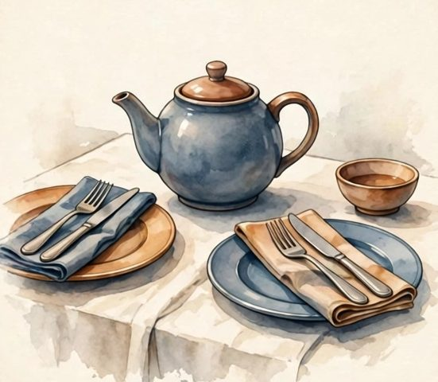
A teapot set between two place settings.
Look at the table long enough and a strangeness surfaces, one the keeper has been waiting for you to notice. There are two chairs, two cups, two settings laid in lamplight — and one life. The guest is not a second person added to yours, like a lodger taken in for company. They are the same life, read at a later page. The conversation at this table is not a negotiation between strangers with competing claims; it is a single household consulting itself across its own length, the way a tree might consult its rings. Everything decided here is decided within one tenancy, by its only tenant, at two hours of the same long day.
This changes the ethics of the table completely, and mostly it changes them toward peace. Between strangers, every kindness is a transaction to be balanced; within one life, kindness to the guest is simply the household treating itself well across time. There is no score to settle because there is no second party to settle it with. The sacrifices you make for them are real, but they are not debts they owe you — they are the ordinary transfers of a house that feeds its own. Likewise their advantages over you, the knowledge and hindsight they will have, are not taunts. They are the same life, enjoying its later chapters. Envy across this table would be a book envying its own ending.
So the keeper pours for both cups from the one teapot, and if you stay for the rest of this hall, you will find the pouring is the doctrine. Two chairs, one life: precedence to neither, courtesy to both. The keeper as they are — tired, mid-journey, deserving of mercy for everything the road has cost so far. The guest as they will be — unknown, underway, deserving of provision for everything the road still holds. Sit down in whichever chair is yours tonight. The tea is the same, the house is the same, and the person across from you, when the years finally seat you both, will turn out to have been on your side of every question all along.
41What You Cannot Ask Them
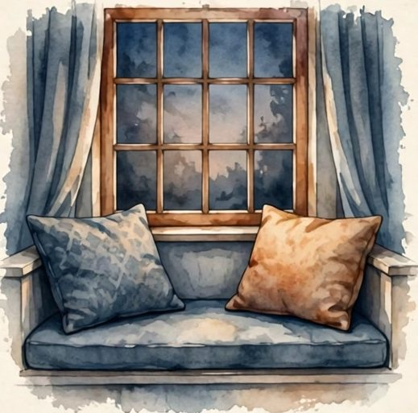
A window seat with two cushions, the light coming in low and kind.
There are questions you cannot put to the guest, and the house posts them nowhere — they are learned the way manners are learned, by sitting at the table long enough to feel their edges. You cannot ask them whether the choice you face will turn out well, because they arrived after the turning and cannot hand you the map of the road you are still walking. You cannot ask them to make the decision for you, or to carry the weight of it forward into a life you chose but never quite chose. The guest room is not an office of appeals; it is a room with a window seat, and a guest who will sit beside you, quietly, in the weather you both share.
You cannot ask them to forgive the past on behalf of everyone the past touched, because forgiveness, where it is owed, is owed to the living, not to the visitor. You cannot ask them to confirm that it was all worth it — the word worth is a scale the house does not keep beside the table, and the keeper removes it gently when he sees it brought in. What you can ask is smaller and braver: what did you notice from there, what did you wish I had written down, what did I almost leave behind that mattered. These are the questions of a good host, and the guest, the keeper assures you, answers every one of them in time.
And so the table teaches its first courtesy, which is the courtesy of not asking the impossible. The guest came to sit with you, not to unmake your uncertainty, and uncertainty is the one dish every guest expects to find on an honest table. Leave those questions where they belong — in the room of the living, among the living, who must answer them with their lives. The silence that follows an unasked question is not empty; it is the sound of respect, of two chairs holding the same weight without complaint. Ask them instead about the garden, the weather, the music they have found. Those they can answer, and the answers are better than certainty.
42Advice Across the Table
If advice is to cross the table at all, let it travel in the plain dishes — the deeds, the maintained things, the papers kept findable — and not in the carved speeches that sound like lessons. The guest will take more from the chair you kept repaired than from the sentence you rehearsed for them, because a chair is advice in a form they can sit in. This is the first law of the table: the future reads what you did more closely than it hears what you meant. Keep, then, the kind of records a careful traveler keeps — dated, legible, honest — and the advice will transmit itself without your having to raise your voice across the years.
What would you tell them, if the rules allowed one short note slipped beneath the plate? Probably not the large doctrines, which rot faster than bread, but the small coordinates: the doctor who listened, the road that was safe after dark, the way the boiler wanted to be treated in January. Advice that survives is advice with a date on it, because the guest knows, better than you, how quickly the world rearranges its facts. Tell them what is true of the present and will be true of the body: rest matters, money is calmer when counted, no promise kept warm too long stays warm by itself.
And listen, because the advice runs the other way too, though it arrives without words. The guest's life, even unspoken, is a quiet commentary on yours — not a judgment, never that, but a measurement of a gentle kind: here is what your Tuesdays built, here is where the habits led, here is the garden, grown or gone. A host who listens to this silence adjusts the table before the meal is over. So keep the note short, the chair sound, the door open. Advice across the table is not instruction; it is two people, years apart, pointing at the same ordinary things and agreeing, finally, on what they were for.
43The Guest Is Not Impressed
A chessboard mid-game, no players, the pieces waiting where they were left.
You might be tempted, as hosts sometimes are, to polish the whole house for the visit — to lay out the achievements like the good silver, to make the life look more deliberate than it was. The keeper watches this impulse with kindness and stops it at the door. The guest is not impressed, he says, and means it as mercy: the person arriving has lived through everything you are tempted to display, and knows exactly what the silver cost and who was not invited to dinner while it was being bought. Performances are transparent to the people who sat through their rehearsals.
What the guest notices instead are the things you would never think to exhibit: that the books were actually read, that the tools were used, that the second cup was always kept clean even when no one was visiting. They will pass the trophies without slowing and linger where the living happened — the worn path to the window, the chair that learned your shape, the game left mid-play on the board, waiting for whoever had the move next. Impression is a young person's currency. The guest has been past that age for a while now, and has come to trade in the only coin the house accepts: evidence of attention.
So put away the silver and keep the table plain. If the house is honest, it will impress the guest without trying; if it is not, no amount of staging will reach them, and the keeper will quietly remove the staging anyway. The visit is not an inspection, and you are not applying for the position of yourself — you have held it, in good standing, every day so far. Let the meal be simple, the room aired, the conversation unhurried. The guest is not impressed, and that is the whole of the hospitality: being allowed, at last, to stop performing for someone who has always known you.
44Laughing at the Same Joke, Years Apart
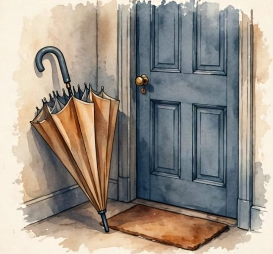
A shared umbrella leaning by a door, still dripping from an old rain.
Somewhere in every life there is a joke that survives everything — the years, the grief, the several people you have been — and the keeper keeps a record of it, because it is one of the truest things the house owns. Tell it now and the guest laughs; tell it then and you laughed; the laugh is the same laugh, only the weather around it has changed. This is why the keeper seats humor near the head of the table. It is proof, better than any letter, that the two people at the table are the same person in the sense that matters — that something essential in you was never renovated away.
Keep that joke, then, the way you keep the house keys: somewhere you can find it in the dark. Write it down if it is the sort that fades, because humor is one of the first inheritances to be mislaid, and the guest deserves to inherit it intact. The house does not require the joke to be good — most of the surviving ones are not — only that it be yours, the kind no one else in the world would laugh at in quite the same way. It is a small thing to bequeath, and it will be one of the first things the guest reaches for when the road was long, the way travelers reach for water before they ask for directions.
And when the laugh comes, years apart, in the same room, let it do its whole work. A shared laugh across a decade is the house's certificate of continuity — not stamped, not framed, but real: the sound of two ends of one life recognizing each other without introduction. The keeper has heard it often at this table, and he says it never gets old, which is a strange thing to say about laughter and the truest thing in the building. The joke is a small raft on a long river. It floats. It carries both of you. It always has.
45The Meal Is Ordinary, on Purpose
The keeper is firm about the menu: nothing grand, nothing that required the whole week and three shops and a performance of competence. The meal is ordinary on purpose, because the guest is not a holiday — the guest is a Tuesday, and Tuesdays must be fed the way Tuesdays actually eat. A banquet would be a lie told in food, and the house does not lie to its guests. What the future self needs from your table is not a feast but a standing arrangement: the bread, the soup, the pot that is never quite empty, the chair that is never quite put away.
There is wisdom in the ordinary plate that no banquet can hold. A feast says this day was special; an ordinary meal, well kept, says every day was worth feeding. The guest will remember — if guests remember meals at all — not the dishes but the continuity: that there was always something warm, that the kitchen was a place where someone was expected, that the house ran on the quiet fuel of being fed. This is hospitality at its most durable. Ceremonies end. The soup continues. And the person arriving at your door in the years to come will not need you to have been brilliant; they will need you to have been regular.
So cook what you cook, and cook it kindly. Leave the second portion where they will find it, labeled in your plain handwriting, with the instructions short enough to read while tired. The ordinary meal is the house's longest letter: it says you were thought of in advance, on an unremarkable day, by someone who did not need an occasion to set your place. The keeper tastes it approvingly — not the food, the intention — and nods toward the future. Ordinary, he says. On purpose. The way houses last.
The Guest Desk
One desk receives all correspondence for this house — questions, corrections, greetings, and word of any room you are keeping ready, any letter written forward, any kindness left where a later self will find it. It is read in the order it arrives.
46What Silence Says at the Table
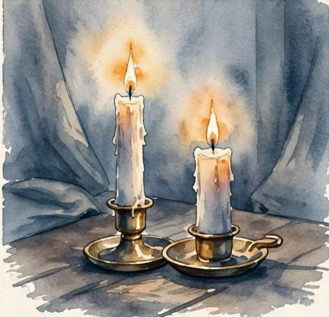
Two candles on a table, one taller than the other, burning at different rates.
Sooner or later the conversation at the table runs out, and what follows is not failure but the other half of the visit. Silence, at this table, is not the absence of speech; it is speech slowed down until it can be felt. The guest does not fidget, and the keeper does not rescue the moment with noise. Two people who share a life do not need to fill every minute of it with evidence. They can sit the way the candles burn — side by side, at different heights, in the same light — and the sitting itself says what the words were too clumsy to carry.
Silence says that nothing needs proving here. It says the host has stopped auditioning for a role they already hold, and the guest has stopped being a test the host must pass. It says the room is trusted. In the early visits, silence frightens people; they leap into it with explanations, itineraries, confessions. The keeper lets them learn at their own pace. By the later appointments, the silence lengthens and deepens, and it begins to hold the things talk cannot: the full weight of all the years, the unspoken thanks, the grief that neither of them needs translated anymore.
So if the table falls quiet, let it. Do not mistake the quiet for distance — distance is noisy, full of slamming doors and raised voices; this quiet is the sound of two chairs that have moved closer over the years until their shoulders nearly touch. The guest will break the silence eventually, with something small: the garden has come up well this year. And you will answer, and the answer will be easy, because everything that mattered was already said in the quiet before it. Silence is the table's second language. Learn it the way you learn any language — by staying in the room.
47Toasts to the One Who Kept Going
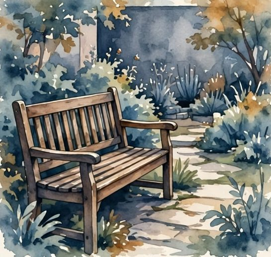
An empty bench facing a garden, morning light on the worn wood.
Every house has its toasts, and this one keeps the custom modest: a raised cup, a sentence, no speeches. The keeper's favorite is the simplest in the register, and it belongs to this hall. To the one who kept going. Not to the one who triumphed — the house has seen too much weather to confuse going with winning — but to the one who, on the ordinary days and the unbearable ones, in the winters when nothing grew and the springs when everything hurt, simply continued. The guest lifts their cup first. They know what the toast costs, because they are the one it describes.
There is no applause in the toast, and that is its honesty. Keeping going is rarely brave in the way stories prefer; it is mostly administrative — meals made, bills answered, one foot placed ahead of the other on a road that had stopped explaining itself. The guest does not pretend otherwise. They raise the cup to the unglamorous machinery of survival: the alarm set again, the letter answered late but answered, the small hope kept in a drawer with the spoons. The house drinks to that. It is the only achievement that includes every other one, the way a river includes all its tributaries without ever mentioning them.
So make this toast while you can still hear it — you are, after all, the one being toasted, only earlier. Let it change how the keeping-going feels from the inside: not a failure to arrive, but a practice the guest remembers with gratitude. When the road narrows and the bench in the garden looks inviting beyond reason, sit down, rest, and then stand again. The cup will be raised at the far end of the years, and the name spoken will be yours. Toasts are promises the past makes to the future. This one, the keeper says, has never yet been broken.
48Leave the Second Chair Out
When the visit ends — and every visit in this house ends the way evenings do, without ceremony — the keeper does not put the second chair away. He leaves it drawn out from the table, angled a little toward the room, exactly where the guest left it. Visitors ask about the custom, because a chair kept out is the first thing a tidy soul wants to correct. The keeper only shakes his head. A chair returned to its place is a visit concluded; a chair left out is a visit expected again. The house runs on the second of those sentences, and it intends to keep running on it for as long as the house stands.
Leaving the chair out is the smallest promise this hall makes, and the most practical. It says the guest's place is not re-let between visits — not to newer ambitions, not to the person you briefly wished you were, not to anyone louder. The place stays theirs, in the only tense that matters, which is the ongoing one. It also keeps the host honest: you cannot walk past that chair every day and pretend the appointment is abstract. It is furniture. It takes up room. It reminds the whole household, morning and evening, that someone is coming, and that how the house is kept is how they will be received.
So leave the second chair out in your own house too — the literal one, if you have it, and the figurative one you certainly have: the hour in the week that belongs to the person you are becoming, the page left open, the plan that assumes a future and behaves accordingly. Do not tidy the future away for the sake of a neater present. The keeper wipes the chair's seat when he passes, out of habit, the way people touch a banister they love. It is, he says, the cheapest hope in the building, and the one that has never once been wasted.
49What They Inherit
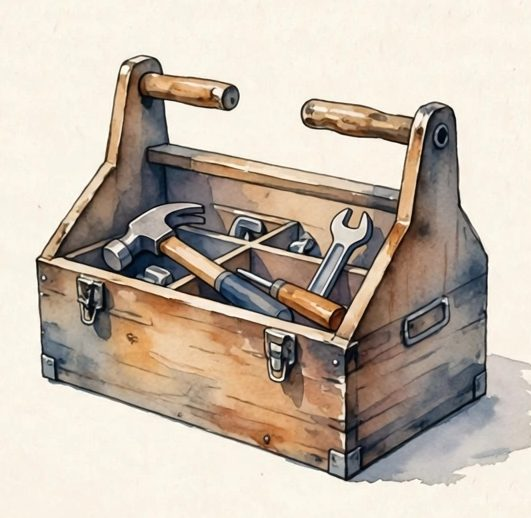
A toolbox with worn wooden handles, each tool shaped by years of hands.
The new hall opens with the keeper doing inventory, because the question of what they inherit deserves a plain answer before it gets a poetic one. They inherit the contents of the house as the house actually is — not the house you meant to keep, not the one in the brochure of your intentions, but the real rooms, with their real repairs and real unfinished corners. They inherit the papers, findable or not; the money, counted or not; the body, rested or not; the friendships, warm or cold. The will, if there is one, is the least of it. The house itself is the document, and it is being written every day, in pencil, by you.
But the keeper is careful to say what kind of inventory this is. It is not a threat, and it is not an audit conducted by a stranger; it is the ordinary truth of every household that has ever passed from one pair of hands to the next. Someone will stand in these rooms after you, holding your keys, reading your arrangements with the eyes of a person who must now live among their consequences. The only question is whether you have thought of that person as a guest or as a rumor. The house asks you to think of them as a guest. Everything else in this hall — the habits, the debts, the stories — is commentary on that one decision.
So read the inventory the way a good host reads a room before a visit: not for shame, but for use. What is broken that can be mended this year? What is heavy that can be set down now, cheaply, rather than later, at a price? What is good that deserves to be said aloud, so the guest knows it was left on purpose? The keeper closes the ledger gently and puts the kettle on. Inheritance, in this house, is not the end of the story. It is the middle of it — the part where the host is still here, still able to adjust the rooms, still in time to leave the light on.
50Habits, the Real Estate
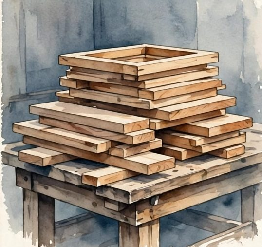
A stack of unfinished woodwork on a bench, the grain showing where the work stopped.
If you want to know what the guest inherits first, before the money and before the objects, the keeper will take you to the bench and show you the real property of the estate: your habits. Habits are the real estate. They are the ground itself — the part of the inheritance that cannot be sold, spent, or given away, the part the guest will walk on every day whether they admire it or not. The route you take through a morning, the way you answer difficulty, the hour you keep and the promises you keep at that hour: this is the land. Everything else is furniture, and furniture can be replaced.
Like land, habits change hands slowly and cost more to alter than to maintain. The guest will arrive to find the paths already worn — some of them good paths, cut true across useful ground; some of them ruts, worn by years of going the wrong way because the wrong way was downhill. They can re-cut a path, certainly; people do it all the time, and this house applauds every honest re-routing. But the keeper is plain about the arithmetic: every path you leave in good order is a path the guest does not have to build out of their own years. Maintenance is cheaper than excavation. It always has been.
So tend the estate at the level of the ground. Walk the good paths often enough to keep them visible; let the ruts grow over, a season at a time, by the simple discipline of not traveling them. Plant where the guest will need shade, and drain the corner that floods every spring — you know the one; it is the mood, the debt, the conversation postponed past its usefulness. The guest will inherit many things you never chose for them. The paths are the ones you choose daily. Choose them the way a person chooses ground for someone they love: with the future's feet in mind, and your own still on the road.
51Skills Passed Hand to Hand
Some of the estate travels by hand. Not the money, which travels by paper, and not the stories, which travel by mouth, but the skills — those go palm to palm, the way they have always gone, from the one who knows to the one who is learning. You are both of those people, at different ends of the same life. What your hands learn now, their hands will know later; what your judgment practices now, theirs will reach for without thinking. The keeper calls this the quietest inheritance in the house, because it arrives without paperwork, and the truest, because it cannot be lost in a market or mislaid in a move.
Notice, then, what it is you are actually practicing. Not the grand skills only — the trade, the craft, the instrument — but the daily curriculum nobody chose: how to wait, how to listen all the way to the end of a sentence, how to repair a thing before replacing it, how to be wrong in a room without making the room pay for it. Skills of that kind do not announce themselves as lessons. They are caught, not taught, caught by the person watching from inside your own life, who happens to be the guest. Every repetition is a rehearsal. The house simply asks that some of the rehearsals be deliberate.
So practice one thing properly, for their sake. Learn the soup by heart; learn the knot that holds; learn the way of speaking to difficult people that leaves everyone, including you, intact. A skill learned at forty is a tool the guest picks up at sixty, already worn to the shape of a familiar hand. And practice the meta-skill beneath them all, the one the keeper values above every trade in the building: how to learn a new thing slowly and without shame. The guest will need new skills you cannot foresee. What you can leave them is the knack of acquiring them — the patience, the method, the unembarrassed beginner's hands.
52The Unfinished Work
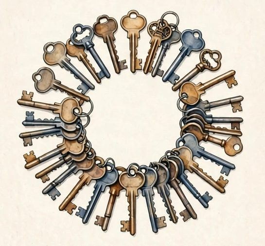
A ring of many old keys, each one tagged by wear rather than by label.
Every estate includes a portion of unfinished work, and the keeper is untroubled by this, the way a gardener is untroubled by a season ending mid-bed. The book half-drafted, the room half-painted, the skill half-learned, the project paused where life interrupted it — these pass to the guest along with everything else, and the only question worth asking is how they are handed over. Unfinished work left in chaos is a burden. Unfinished work left in order — tools cleaned, notes legible, the next step marked with a pencil line — is something else entirely. It is an invitation. The difference is not the amount of work. It is the state of the bench.
The keeper has seen both kinds of inheritance in this house. He has seen the drawer of tangled obligations that took the guest a year to forgive, and he has seen the other kind: the work left like a good campsite, everything squared away, a short note saying where the path resumes. The guest in the second house did not feel haunted by the unfinished thing. They felt accompanied by it, as if the host had stepped out of the room only a moment ago and would understand if the work continued differently — or did not continue at all. For that is the other courtesy: leave the work so it can be set down without guilt, as well as picked up without confusion.
So if you cannot finish the thing — and most of us leave most things unfinished, this hall is honest about that — finish the hand-over instead. Write the state of play in plain words. Say what mattered about it and what did not. Mark where you stopped, and leave permission, in writing if necessary, for the guest to close the file their own way. Unfinished work is not a failure of the estate. A messy succession is. And the guest, standing at your bench with your tools in their hands, will be grateful for the pencil line most of all: the small, clear mark that says the work was loved, and is now theirs to love or to leave.
53Debts and Credits of the Heart
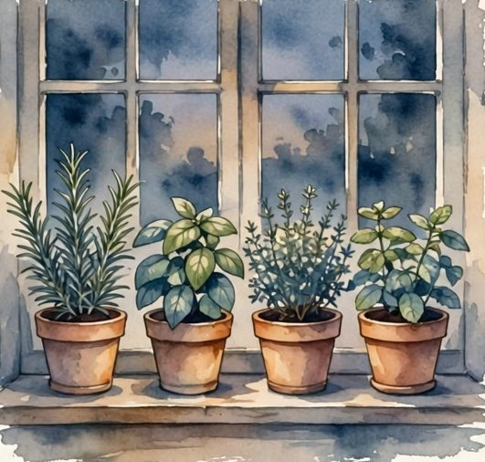
A row of potted herbs on a windowsill, green in the winter light.
Beyond the money and beneath it runs another set of accounts, and the keeper keeps this ledger too, though he keeps it in a drawer rather than on the desk. These are the debts and credits of the heart: the kindnesses owed and owing, the apologies unsaid, the thanks never delivered, the small loans of trust between people that no bank records and every life depends on. The guest inherits this ledger precisely as it stands on the day they arrive. Nothing in it expires. Nothing in it is denominated in anything the guest can earn back except by living — which is exactly why the house asks you to keep it current.
The credits are real, and the keeper insists they be entered as carefully as the debts. The friend who will answer your guest's call in a bad year because you answered theirs in a good one — that is a credit, built by you, spendable by them. The reputation for fairness, the name that opens a door in a town you will never see again: credits, all of them, and the guest will draw on accounts they did not know existed. It works the other way with the debts. An apology left unpaid does not vanish; it waits, with interest made of awkwardness, for the person least able to explain it. Settle what you can. What you cannot settle, name.
For the ledger of the heart is not kept to shame the host — the house keeps no instrument for that — but to make the inheritance honest. The guest deserves to know the true state of the accounts: who can be called, who must be thanked, who is owed an amends and roughly why. Write it down somewhere findable, the way you would for money, because it is money, in the only currency that circulates after all the others stop. And then go one step further, the keeper suggests, and pay down one small debt this week. The guest will not know which one. They will only know the house felt lighter when they arrived.
54Friendships You Keep Warm for Them
Of all the things you keep in repair for the guest, the friendships may be the easiest to neglect, because they do not complain the way a roof does. A friendship left unvisited does not leak; it cools. And the guest will arrive in a life whose weather you cannot foresee, on days when the difference between a warm friendship and a cooled one is the difference between a door that opens and a door that has to be knocked on, hopefully, by a near-stranger with an old claim. So the house treats friendship as part of the heating system. It is not decoration. It is how the rooms stay livable in the years when the guest will need them most.
Keeping a friendship warm is embarrassingly undramatic work, and that is the point. It is the short letter answered this week rather than next month; the name remembered and used; the small news exchanged before it becomes large news, too heavy to carry across a silence. It is showing up in the ordinary seasons, not only at the ceremonies and the crises. The keeper observes that friendships are almost never lost in arguments; they are lost in postponements, a hundred harmless delays stacked into a wall. The guest inherits the wall, or the warmth. Which one is decided by nothing more exotic than whether you sent the message while it was still easy to send.
So keep them warm, deliberately, as estate work — because that is what it is. The friend who has known you for thirty years will know the guest on sight, and will be, for them, a living bridge back to everything the guest has forgotten about being you. There is no replacement for that person, and no way to manufacture the bridge later at any price. Write the letter. Make the call. Keep the standing appointment that has no purpose except itself. You are not only maintaining your own present comfort. You are setting chairs around a fire for a guest who will arrive cold some year, and be very glad the fire was kept.
55Enemies Are Not Part of the Estate
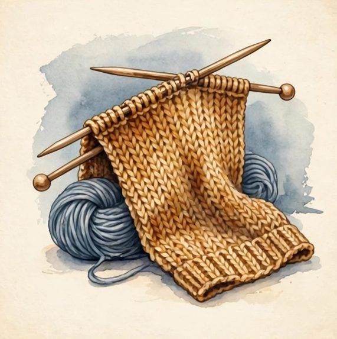
A half-knitted scarf still on its needles, the wool a warm gray.
The keeper is asked, now and then, whether old enemies are part of the estate — whether the guest inherits the feuds along with the furniture, the grievances along with the garden. His answer is short, and it is one of the few times he sounds almost stern. No. Enemies are not part of the estate. A feud is not property; it cannot be settled on anyone, and this house refuses to pretend otherwise in its paperwork. What the host holds against another person dies with the holding, unless the host deliberately renews it — and renewal, the keeper notes, is a choice made fresh each morning, in the present tense, by the living.
This is not a doctrine of pretending. The house keeps honest records; injuries are injuries, and some of them are written in the ledger of the heart where they belong, as facts. But a fact is not a bequest. The guest may read the record — the guest should read the record; ignorance helps no one — and the guest will draw their own conclusions, in their own years, with their own heart. What the guest must never receive is an instruction: hate this one, in my name, after I am finished hating them. The house does not draft instructions of that kind. It considers them the only true forgery in the building, a signature forged on someone else's life.
So let the quarrels be yours, time-stamped and personal, and let them end where you end. If a reconciliation is possible in your years, make it — the cleared account is a fine inheritance. If it is not possible, then leave the matter plainly unfinished rather than weaponized: a note in the record, a door neither locked nor barred, and silence where the orders would have gone. The guest will have their own difficult people; every life issues a fresh supply. They do not need yours as well. Enemies are not part of the estate, and the keeper, entering it in the inventory in his careful hand, underlines the line twice.
56The Stories They Will Be Told About You
A closed ledger tied with a ribbon, resting on the corner of a desk.
The guest will not learn your life only from you. Long after your own telling is done, the world will go on telling them stories about you — in the kitchen of an old friend, at a reunion you do not attend, in the margin of someone's memory where you appear, mid-sentence, doing something characteristic. You cannot edit these stories in advance, and the keeper advises you not to lie awake trying. But you can understand their ingredients, because the stories people tell are not made of your intentions. They are made of the small repeated scenes: how you behaved when the plan collapsed, what you did with good news that was not yours, whether the room relaxed or tightened when you entered it.
This is not a warning so much as a clarification of what reputation actually is. It is not the monument version of you, not the obituary draft we all secretly compose; it is a folk art, built by many hands out of afternoons. The guest will inherit it the way one inherits weather in a valley — as a condition of the place. Some of it will be unfair. Some of it will be kinder than you deserve. The house has noticed that the unfairness and the kindness tend to be distributed by the same mechanism: people remember, with unreasonable accuracy, how they felt in your company, and they embroider the facts to fit the feeling, in both directions, all their lives.
So if you wish the stories well, attend to the feeling, which is the only part of the manuscript still in your hands. Be the person whose arrival lowered the room's shoulders. Tell the truth at the moments when a small lie would have been easier and no one would ever have known — those moments are the load-bearing walls of every story told later. And then let the stories go, as everything in this hall must finally be let go. The guest will hear them, smile at some, correct a few in their heart, and add their own chapters. That is not a loss of control. That is the estate, working exactly as estates do.
57Habits of Attention, Bequeathed
Here is a bequest so light it is easy to miss in the inventory: your habits of attention. What you habitually notice — and what you habitually walk past — is a way of seeing the world, and the guest will see through it the way one sees through a window: constantly, and mostly without knowing the glass is there. If you have trained your attention on grievances, the guest's world will be furnished with grievances, faithfully noticed, accurately catalogued. If you have trained it on the small repairs the world is always making — the returning bird, the neighbor's new fence, the light doing its brief evening trick — the guest inherits that world instead, at no extra cost, in the same eyes.
Attention behaves like the paths in the earlier hall: it wears in. A decade of noticing kindness makes kindness easy to find, not because the world changed but because the noticing apparatus did — it grew quick, the way a musician's ear grows quick, at picking its chosen signal out of the noise. The guest will benefit from the apparatus exactly as they inherit the paths, and suffer from it the same way too. This is why the keeper calls attention the stealthiest item in the whole estate. It transfers silently, it colors everything, and it is almost the only inheritance the guest will use every single day of their life, from the first hour to the last.
So practice noticing on purpose, now and then, as deliberate estate work. Spend a season collecting evidence of one good thing — competence, say, or generosity, or the world's habit of continuing — and let the collection do its quiet work on the glass. You are not deceiving anyone; attention is not a claim about the world, it is a choice about where to stand in it. The guest will stand where you stood oftenest, and see what you saw most. Leave them a good vantage. It costs nothing but practice, it weighs nothing at all, and of everything in this house, it may be the gift they thank you for most.
58What You Deliberately Leave Out
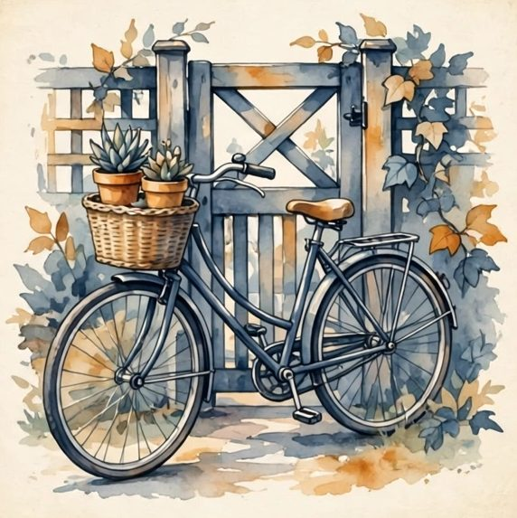
A bicycle leaning at a garden gate, the basket empty and clean.
An estate is defined as much by its omissions as by its contents, and the keeper — who has read many inventories — says the omissions are where the host's judgment shows most clearly. Some things you will deliberately leave out. The bitter correspondence, kept for years out of a sense of evidence, that would only teach the guest to re-open a closed wound. The family quarrel's full archive. The medicine of old humiliations, bottled and labeled long past its usefulness. Leaving these out is not dishonesty; it is editing, and every honest estate is edited. The guest deserves the record of your life, not the whole warehouse of it, and certainly not its poisons.
There are kinder omissions too, the ones made of tact. You may leave out the full account of what the guest's arrival cost you — the fears entertained at three in the morning, the hopes revised downward in private, the sheer labor of keeping a house ready for someone whose face you could not picture. The guest does not need to inherit your anxieties along with your furniture; gratitude is hard enough without a bill attached. A good host absorbs certain costs silently, not out of martyrdom but out of accuracy: those costs were the price of the present, and they were paid, gladly or not, by the person who owed them. They are not transferable. Leave them out, and let the guest's first feeling in the house be welcome, not debt.
And some omissions are simply mercy toward everyone. Leave out the score-settling memoir, the letter that would detonate in a stranger's hands, the confession that would make your peace by breaking someone else's. The keeper keeps a small fire for such papers, and he tends it without drama, the way he tends everything in this house. What is left out deliberately does not disappear from history; it disappears from the inheritance, which is a different and more merciful thing. The guest will build their own sorrows in their own time. Your estate work is to hand them a house with the light on, the kettle ready, and the worst of the weather kept, on purpose, outside the door.
59The Estate Is Mostly Invisible
A shelf of well-used books with blank spines, their pages soft with reading.
The keeper closes the hall by opening the full inventory one last time and inviting you to notice what is not on it. There are lines for the house, the papers, the money, the tools — the visible estate, the part that can be listed, valued, argued over in a lawyer's office. And then there is everything that actually matters, which has no line at all. The estate is mostly invisible. It is made of habits worn into paths, of attention trained like a garden, of friendships kept warm and debts of the heart settled or honestly named, of the smell of a kitchen where someone was always expected. None of it photographs. All of it transfers.
This is why two people can inherit identical houses and receive entirely different estates. The bricks are the same; the welcome is not. One guest arrives to find the place humming with prepared kindness — the routes worn true, the accounts gentle, the stories told in the valley already softening toward them. Another arrives to the same bricks and finds only bricks. The difference was never in the property. It was in the invisible work, done or not done, across the ordinary years: the small maintenances of the inner house that no visitor applauds and no inventory captures, which are nevertheless the entire substance of what one life hands to the next.
So do not be discouraged that the real estate work is invisible — it is invisible the way roots are invisible, which is to say in the manner of the things holding everything up. No one will ever read you the full inventory of what you left; the guest will simply live inside it, the way one lives inside a climate. Tend the climate. Keep the paths true, the accounts gentle, the attention aimed at what deserves it. The visible estate will take care of itself, or near enough. The invisible one — the only one that was ever really yours to give — is being decided today, quietly, by everything you do next.
60Sign Nothing in Anger
The hall ends with a rule of the desk, and the keeper states it without ornament: sign nothing in anger. Not the letter, not the form, not the message composed at the hour when the blood is loudest. Anger is a weather that passes through every house; a signature is a road built in that weather, and roads outlast the storms that inspired them. What is written in heat is read in cold — by colleagues, by strangers, and in time by the guest, who will find your angriest documents filed, inevitably, at the top of the pile, because anger writes large and files carelessly. The house asks for one night of delay. Almost nothing true becomes false by morning; almost everything cruel becomes clearer.
This applies to the invisible documents most of all, the ones signed in the heart without paper. The decision, made in a hot hour, never to speak to someone again. The verdict on a whole chapter of your life, delivered at midnight and treated ever after as law. The promise extracted from yourself in fury — to quit, to burn, to never try again — which the future is then expected to honor as if it were a considered bequest. These are signatures too, and the guest inherits their effects. Grant yourself the same courtesy the house grants its paperwork: the drawer, the night, the second reading. A decision that survives a sleep is a decision. One that does not was only weather, looking for a pen.
So keep a drawer for unsigned things, and let anger use it. Write the letter if you must — the writing is honest work — but let it sleep in the drawer unsent, and sign it tomorrow only if tomorrow still agrees with it. The keeper has kept such a drawer for years, and he says its contents are the most instructive reading in the house: page after page of storms that never made landfall. What the guest inherits from that drawer is nothing, which is the point. They inherit the calm where the signature would have been. Few bequests in this whole hall are worth more, and none is cheaper to arrange.
The Guest Desk
One desk receives all correspondence for this house — questions, corrections, greetings, and word of any room you are keeping ready, any letter written forward, any kindness left where a later self will find it. It is read in the order it arrives.
61The Stranger Who Is You
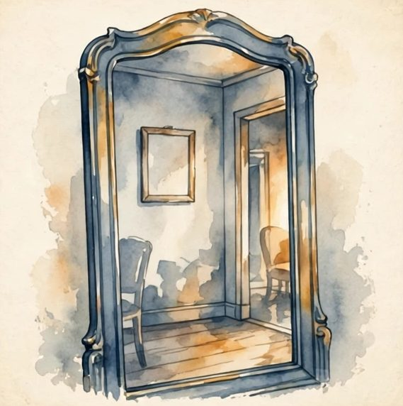
A tall mirror reflecting an empty room, the light entering from a door unseen.
The new hall begins with a correction the keeper delivers gently, because it unsettles people: the guest you have been preparing for is, in several honest respects, a stranger. They will stand in your rooms with your name in their pocket and your history in their bones, and still they will reach for different things, laugh at different moments, keep different hours. This is not a failure of the arrangement. It is the arrangement, accurately described. A person who crosses twenty or thirty years of weather does not arrive unchanged, any more than a river arrives at its later bend still holding the shape of its first one. The house asks you to prepare for the guest who is actually coming, and that guest is partly unknown — to you, and at first, to themselves.
Strangeness, handled well, is not the opposite of intimacy; it is one of its ingredients. You already know this from the near distances: the friend of thirty years can still surprise you across a breakfast table, and the surprise is not a crack in the friendship but proof of its aliveness. The guest is that same experience, stretched along a single life instead of across two. They are not you with more candles on the cake. They are the next chapter of a book whose author kept living while they wrote it, and chapters are allowed — are required — to differ from one another, or the book is only one page long.
So practice the hospitality owed to a stranger, which is a particular and honorable kind: curiosity before assumption, room before itinerary. Do not fill the guest room with your certainties about who will sleep in it. Leave space in the drawers — literally, in the plans, in the expectations — for tastes you cannot predict and opinions you would not vote for. The keeper leaves the mirror in the guest room uncovered, knowing what it will show the arriving guest: a face that is theirs and not theirs, in a house that is theirs and not theirs. That is not a haunting. That is a meeting. This hall exists to make it a kind one.
62They Will Like Different Music
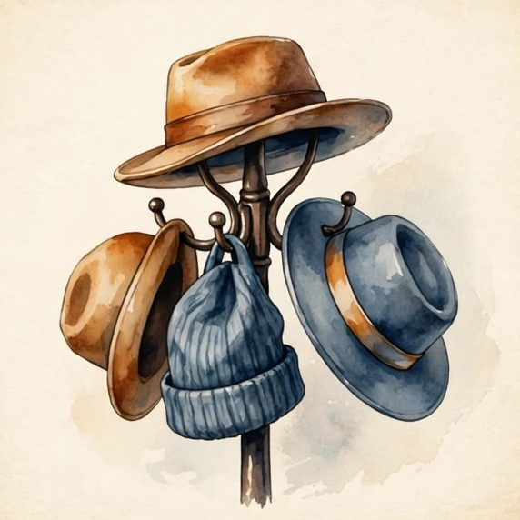
A hat stand holding three different hats, none of them matching.
Begin with the smallest evidence, because the smallest is hardest to argue with: they will like different music. The songs that currently feel like the load-bearing walls of your inner life — the keeper has watched guests walk past them the way one walks past furniture in a house one has inherited, with respect, and no intention of sitting down. Something else will be playing in their kitchen. Something you would currently turn off. This is not betrayal, and it is not decline; taste is one of the most weather-sensitive instruments a person owns, and thirty years is a great deal of weather. The melody survives; the arrangement changes; sometimes the melody does not survive, and the house survives that too.
There is a useful humility in starting here, with the playlist, before moving on to values and griefs. If you can make peace with the stranger's music — can imagine, without flinching, a future kitchen where your favorite record gathers dignified dust — you have learned the posture this whole hall requires. The guest is not obligated to preserve your preferences in amber, as if the self were a museum and they its night watchman. They are obligated to nothing of the kind, and the house does not ask it of them. Preferences were always tools for living a particular stretch of road. New road, new tools. The hand that holds them is what continues.
So leave the music collection in good order, and leave it without instructions. Let them keep what still sings to them and give the rest away with your blessing, which the keeper will convey if necessary. And return the courtesy in the present tense: when your own tastes shift now — and they do, quietly, all the time, in ways you barely register — do not apologize to the person you were at twenty. That person is a guest in your house too, and they are not keeping score. The music changes. The listening continues. Somewhere down the years a stranger will hum a tune you never taught them, in your own voice, and both of those facts will be true at once.
63The Face in the Later Mirror
There will come a morning — ordinary, unmarked, probably a Tuesday — when the face in the mirror is the later one, and the remarkable thing is that you will not be startled. The change never arrives all at once; it commutes in, a line at a time, the way weather commutes into a season, so that the stranger of the previous hall turns out to have been arriving for years, in installments too small to argue with. The keeper keeps no portrait in the guest room for exactly this reason. A portrait would be a claim about the face. The mirror makes no claim. It simply reports, with the neutrality of good glass, who has come down to breakfast.
The house is tender about this face, because so much foolishness gathers around it. The face is not a report card. It is not the outside of a success or the wrapper of a failure; it is a landscape in its later season, and landscapes are not worse for having weather in them — they are only more fully themselves. The guest will know this face the way you know yours: from the inside, where it is not a face at all but a point of view, warm and continuous and unchanged in the only way that matters to the one living behind it. Every age believes the looking-out part is the permanent part, and every age is right.
So make friends with the mirror's long honesty now, while the installments are small. Greet the face you have without negotiating with it, and you rehearse the greeting the guest will one day give the face they have. Leave, among the invisible estate, a good relationship with mirrors: no flinching, no bargaining, no cruel commentary delivered to glass. The keeper wipes the guest-room mirror each week with a soft cloth, and he does it carefully, as one tends anything that will someday tell the truth to a friend. The face in the later mirror is coming. It is arriving the slow way, through your own mornings. Meet it as it comes, kindly, and it will never be a stranger at all.
64Their Values, Shifted a Few Degrees
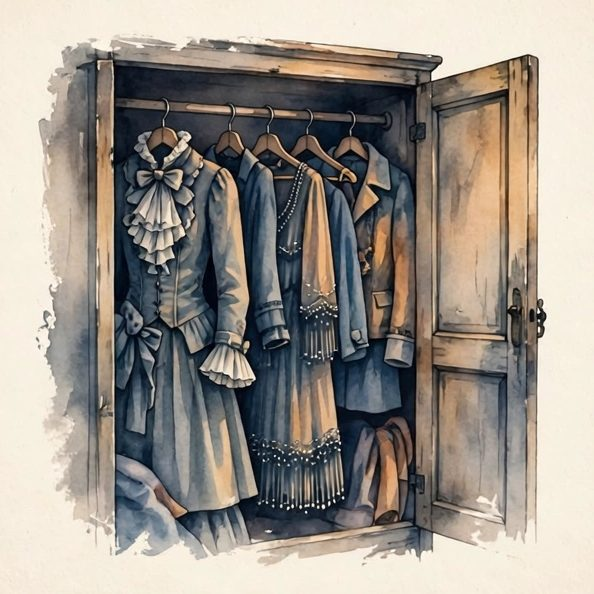
A wardrobe ajar, clothes of different eras hanging side by side.
The music was the small evidence; this is the larger. The guest's values will not be your values carried forward intact, like furniture under dust sheets. They will be your values after thirty years of being lived in: re-arranged, worn at different edges, a few pieces quietly given away and one or two new ones acquired that would startle the present company. The keeper compares it to a needle's drift — a few degrees, no more, most likely; but a few degrees, held over a long road, is the difference between one valley and the next. The guest may prize freedom where you prized safety, or slowness where you prized speed, and neither of you is the error in the calculation.
It helps to remember that your own values have already done this, more than once. The certainties of your earlier decades did not all survive contact with your life, and the ones that fell were not always refuted — often they were simply outgrown, the way a house outgrows a room's original purpose and turns the nursery into a study without ceremony or apology. You did not betray the younger self by rearranging; you housed the same life in the rooms it needed next. The guest will do the same, with your values as their starting furniture. Starting furniture is an honorable role. Nothing in this house needs to be the final arrangement to have been worth keeping.
So hold your values firmly enough to live by and loosely enough to be inherited. Argue for them in the letters, by all means — the guest deserves to know what the furniture meant to you, and why. But do not attempt to bolt anything to the floor. A value that can only survive under guard was perhaps never as strong as it looked, and a value worth bequeathing can survive being examined by a beloved stranger who sees it from a later year. The keeper's own rule is carved nowhere and observed everywhere in this house: convictions are welcome here; cages are not. The guest will rearrange the rooms. Leave them the light to do it by.
65They Have Forgotten What You Cannot
An old radio on a wooden shelf, its dial resting between stations.
Prepare for a small grief inside the large courtesy: the guest will have forgotten things you cannot forget. The afternoon you replay like a worn recording, the sentence someone said in a kitchen in a particular year, the humiliation that still warms your ears — the guest may walk past all of it with a stranger's light step, unable to summon the charge. This will feel, if you let it, like a loss of evidence, as if the years were being edited by someone with no respect for the archive. The keeper counsels otherwise. Forgetting, in the guest's life, is not vandalism. It is mercy with a long fuse, and much of it is the exact mercy you are currently praying for.
You know the mechanism already, from your own side of the table. There are pains of your earlier life that once organized whole years and now arrive, when they arrive at all, as facts without weather — you can report them the way you report an old address. The fire went out of them so gradually you never attended the ceremony. The guest stands at the far end of that same process, applied to everything you currently carry at full heat. They have not betrayed those experiences. They have survived them, which is what experiences are for. A memory that no longer burns is not a memory destroyed; it is a memory that has finished its work and been honorably retired.
So do not bequeath your memories as obligations. Write down what is factual and useful — the names, the dates, the whereabouts of things — and let the emotional charges be the guest's to keep or set down. If they remember the kitchen sentence, well; if they do not, the sentence has not been wasted, because it did its work in you, in your years, which were the years it was for. The keeper keeps the guest book by the door for a reason: some things are recorded precisely so that no one has to carry them. Leave the record. Let the guest travel lighter than the archive, humming something, through rooms you kept for them with love.
66They Remember What You Never Noticed
The exchange of memory runs both ways, and the other direction is stranger. The guest will remember, in unreasonable detail, things you never noticed at all: a kindness someone did you in passing, which you registered as weather and they stored as climate; the exact quality of light in a room you hurried through; a sentence you said carelessly, decades back, that went on living in them long after you had finished meaning it. Memory is not a registry office. It keeps what it keeps, often the garnish rather than the meal, and the guest's archive will surprise you precisely where yours is blank. Neither archive is the true one. They are two nets, dragged through the same river, hauling up different fish.
This has a practical consequence the keeper is fond of pointing out: you cannot know which of today's moments are being kept. The significant ones, staged and photographed, may wash away entirely, while some unremarkable Tuesday — the soup, the joke, the light on the stairs — is carried forward at full strength into a century you will not see. This is not a reason for anxiety; it is a reason for a certain steadiness of conduct across the ordinary days, since the ordinary days are, statistically, the ones under archival observation. Behave in the small hours as if they might be remembered, because they might — by the only witness whose testimony will outlast all the others, who is the guest.
And there is comfort in it too, of an unexpected kind. The things you fear you are losing — the details already softening at the edges — are not the whole of what is being kept. Somewhere in the guest, a version of this season survives at a resolution you cannot achieve anymore, preserved by the simple fact that it struck them, at the time, with the force of the present tense. The past self and the future self keep each other's archives the way neighbors keep spare keys: imperfectly, generously, without ever comparing the sets. You will forget what matters to them. They will remember what never registered with you. Between the two failures of memory, somehow, the whole life gets kept.
67Do Not Dress the Guest in Your Clothes
A pair of glasses resting on an open blank book, waiting on the desk.
A word now about the wardrobe, because the wardrobe is where this hall's doctrine becomes literal. Do not dress the guest in your clothes. Do not hang your convictions in the guest room pressed and ready, with the expectation that the arriving stranger will simply put them on — your style of courage, your cut of faith, your exact way of wearing a life. Clothes are the most personal of inheritances and the least transferable; what fits the body that chose them rarely fits the body that receives them, and a guest dressed by force in someone else's wardrobe is not honored by the outfit. They are costumed. The house can tell the difference, even when the host cannot.
This is harder to practice than to state, because the dressing rarely looks like dressing. It looks like sensible preparation: the career path left oiled and ready, the opinions pre-argued, the whole personality laid out like a place setting, fork of certainty on the left, knife of certainty on the right. And some of it is right — the estate exists, the tools are real, the guest will use what fits with gratitude. The keeper's distinction is between leaving clothes available and leaving them compulsory. A wardrobe left open is hospitality. A wardrobe left locked onto the guest is a uniform, and this house, whatever else it is, does not issue uniforms to its own family.
So leave the good coat, by all means, if it is a good coat — leave it clean, mended, hanging where it can be found. But leave it as an offer. The guest may wear it for years, or may wear it once and trade it for something in a color you would never have chosen, and both of those outcomes are successes by the only measure this hall recognizes: the guest, dressed by their own hand, warm. Your task was never to be their tailor across the decades. It was to keep the house stocked, the light on, and the drawers unlatched. What they wear out of your front door is the first sentence of a story that is, at last and properly, theirs.
68Their Courage Is Not Yours
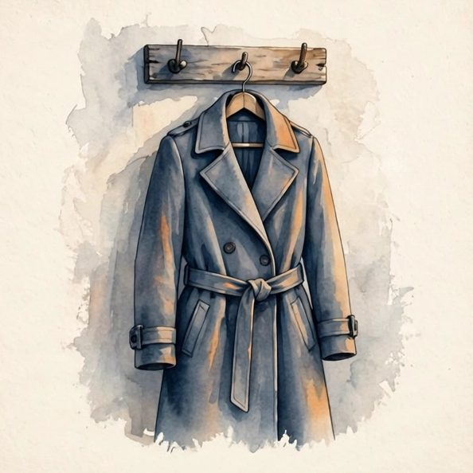
A coat of a different style hanging on a hook, its pockets empty and clean.
Their courage is not yours, and the sooner the house says so plainly, the kinder everything after it becomes. You may have been brave in the register of your years — the risks taken, the stands held, the fears walked through at the pace available. The guest's bravery will arrive in a different uniform. It may look, to your eyes, suspiciously like caution: the risk declined, the fight not joined, the quiet life defended like a border. Or it may look like recklessness, a leap you would never have taken, made with a calm you cannot imagine. The keeper has learned to withhold the comparison. Courage is measured against the fear it answers, and the guest's fears are not the ones you trained for.
Every generation of a single life fights on different ground. The fears of the early years are loud and specific — failure, exposure, the opinion of rooms full of people. The later fears are quieter and larger, and the courage that answers them is correspondingly less visible: the courage to be a beginner at an age that discourages it, to depend on others without keeping accounts, to love things that will be lost on a schedule everyone can read. None of this photographs well. All of it costs exactly what courage has always cost. The guest is not a diluted version of your bravery. They are bravery's next translation, into a language you only partly speak.
So leave them their own coat of courage, hanging beside yours if they want it, untouched if they do not. Do not measure their heart by the map of your old battlefields, and do not let anyone else measure it either — the house will correct visitors who try, gently and at once. If there is courage you wish to bequeath, bequeath it in the only form that transfers: the story, told plainly, of what your fear was and what you did while it was happening. Stories leave the listener free. Standards do not. The guest will find their ground, and stand on it, in their own style. The keeper, watching from the doorway, will recognize the posture anyway. It runs in the house.
69Their Grief Has Its Own Names
Grief, too, has its own names in the later years, and they are not the names in your current register. You grieve now for the things your life has taught you to grieve — in your vocabulary, at your volume, with your rituals half-learned. The guest grieves otherwise. Time will have taught them losses you cannot currently imagine, in an order you cannot predict, and it will also have retired some of yours: the guest may stand dry-eyed at a memory that still floods you, not from coldness but from the strange algebra by which a sorrow, fully lived, sometimes converts itself into a kind of furniture — present, solid, no longer sharp to the touch. Neither grief is the correct one. They are weather reports from different decades of the same country.
The house does not rank griefs, and it forbids the comparison in both directions. You are not to instruct the guest, in advance, on what must be mourned forever — a grief bequeathed as a duty is only a debt wearing black, and this estate does not deal in those. Nor is the guest's quieter weather a verdict on your louder one. They had years to do their mourning in, including years you have not lived yet; their calm at a particular grave is not evidence about the grave, or about you. It is evidence about time, which had been working on that sorrow since before you finished your share of it. Let time keep the credit. It is one of the few things time does entirely for free.
What you can leave them is not your grief but your grief-craft: the knowledge, earned at whatever price you paid for it, that sorrow is survivable in installments, that it has seasons and visiting hours, that a life can be built with the grief inside the house rather than the grief owning the house. That craft transfers even when the particular sorrows do not. The guest will name their own losses, in their own words, some of them words you would not recognize for people you loved in common. Let the names be theirs. Ring the bell for your dead in your way, now, while the ringing is yours to do — and trust the guest to ring it in theirs, later, in a tone that would startle you, and is right.
70The Guest May Disagree with You
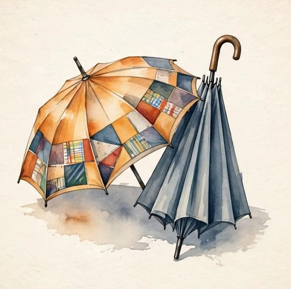
Two umbrellas side by side, one bright, one plain, sharing a stand.
It must be said in this hall, because the hall is honest: the guest may disagree with you. Not on the music only, or the wardrobe, but on matters you currently hold as settled — the shape of a good life, the meaning of an old decision, what your shared history was actually about. They will have evidence you lack, namely everything that happened next, and they will read the family archive from the far end, where plots look different. The keeper does not treat this as a crisis. He treats it as the table working as designed: two people, one life, and a conversation robust enough to hold a genuine difference without either chair being overturned.
Disagreement from the future has one peculiarity worth respecting: it cannot be answered in advance. You cannot win the argument now, by filing briefs and sealing letters and arranging the evidence — or rather, you can file them, and the keeper will keep them dry, but the guest will read them as what they are: the opening statement of the side that spoke first. A fairer gift is to leave the record whole: not only your conclusions but your reasoning, not only the decisions but the doubts that attended them, so the guest disagrees with the real you and not with a statue. Arguments conducted across years deserve actual opponents. Give them one, in the documents, with your uncertainties left honestly in.
And practice, in the present tense, the posture you hope the guest will meet you with. Hold one of your own settled opinions up to the light this week, as an exercise — not to abandon it, but to remember what it feels like to be the person a later self might correct. That feeling, rehearsed kindly, is the whole diplomatic service of this house. The guest may disagree with you. They may also, having read the whole record, agree more deeply than you expected, for reasons you could not have foreseen. Either outcome is a form of being known. The keeper sets two umbrellas by the door, one bright, one plain. The rain, he notes, does not ask them to match. It only asks them both to open.
71Loving Someone Who Replaces You
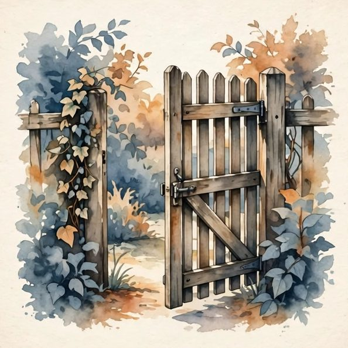
A garden gate standing half open, the path beyond it in soft light.
Here is the tenderest assignment in the hall, and the keeper does not pretend otherwise: you are asked to love someone who replaces you. Not someday, not in symbol — in fact. The guest will sit in your chair using your hands; they will answer to your name in rooms you built; they will be, to everyone who meets them later, simply you, while being — in music, in values, in courage and grief — measurably someone else. The tenancy changes hands without the house ever standing empty, and the one displaced is you. Every host in this house faces the moment of understanding that the preparation has a cost, and the cost is that the future does not need your permission to be different, only your blessing to be welcome.
Love of that kind cannot be faked, but it can be practiced, and the practice grounds are closer than you think. You have already been replaced, several times, by versions of yourself you would not have predicted — and some part of you, looking back, has made peace with each successor, even the embarrassing ones, because the alternative was to spend the present at war with the past. Extend the same amnesty forward. The guest is not an intruder in your life; they are its continuation by other means. To resent their differences is to resent the river for reaching the bend. The water is not disloyal. It is water, doing the one thing water was ever asked to do.
So love them the way the house loves its occupants across the years: without conditions on their resemblance to the previous tenant. Leave the gate half open — that is the keeper's image for the whole doctrine — neither barred against the stranger nor flung wide in a welcome so theatrical it frightens them off. Half open: an ordinary, daily, chosen hospitality. Tend the garden they will inherit without insisting they keep your flowerbeds. Speak of them, when you speak of them, in the grammar of affection rather than anxiety. The guest will arrive someday at the gate and find it exactly so, and they will know, before they know anything else about you, that they were loved by the person whose place they took.
72The Same Laugh, Altered
The hall closes where it nearly began, with the laugh — but the laugh has traveled, and it is only honest to say so. It is the same laugh: the keeper, who has the longest memory in the house, would know it anywhere, through a wall, across a crowded decade. And it is altered. Its pitch has settled; its occasions have migrated; there are new notes in it — a slower warmth, a readier mercy, a note of recognition when the joke is an old one, surviving, as the survivors do, with a slight limp. A laugh that crossed thirty years unchanged would not be a triumph of continuity. It would be a recording. The guest is not a recording of you, and the laugh is the proof the house trusts most, because nobody can rehearse a laugh.
Think of it the way musicians think of a theme passed down an orchestra: recognizable in every section, owned by none of them, changed by every instrument it passes through and somehow more itself for the changes. Your laugh has already survived several such passages — childhood's version, the version of the hard years, the current one, which would startle the child and be gently corrected by the elder. Continuity, in a life, is never the absence of alteration. It is alteration conducted at a pace the heart can follow, by a person still recognizably in possession of the melody. The guest holds the melody now. They play it slower, in a lower key, with ornaments you never learned. It is, unmistakably, the family tune.
So end the hall in good cheer, which is this house's way of ending anything important. The stranger is you; the laugh is yours and theirs and neither's; the difference between the versions is not loss but travel, the honest patina of years actually lived. When you next laugh — at the old joke, at a new one, at the whole improbable arrangement of being a person — listen for a moment to its carrying power. Somewhere down the years it lands in a kitchen you will never see, in a voice you would know in your sleep, and it does its work there: it tells the guest that joy, at least, was one inheritance nobody had to probate. It passed hand to hand, like everything that matters in this house, and it arrived still warm.
73Not a Judge, Not a Ghost
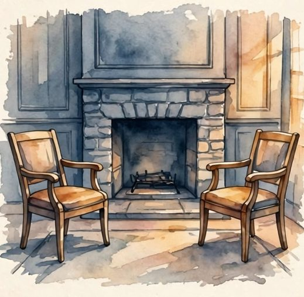
An unlit fireplace with two chairs turned toward each other, the grate clean.
The new hall states its whole doctrine in its title, and the keeper asks that it be learned before anything else in the room: the guest is not a judge, and the guest is not a ghost. Not a judge — no one is coming to weigh your life on the house's level scale, to read the ledger aloud, to pronounce the sentence your worst three-in-the-morning thoughts have been rehearsing. And not a ghost — no one will hover at the foot of your bed in the small hours, rattling the chains of roads not taken, making the present pay rent to the might-have-been. Both figures are common inventions of fear, and the house, which knows its guest personally, dismisses them at the door with courtesy and finality.
What fear does with the future, given an idle hour, is hire it. It hires the guest as an auditor because an auditor's visit can be prepared for with anxiety, which feels like work; it hires the guest as a haunting because a haunting at least means the story matters. The keeper offers the house's plainer employment instead. The guest is a guest. They will arrive the way guests arrive — tired from the road, glad of the light, carrying news you cannot predict — and they will want what guests have wanted since the first fire was lit in the first hearth: to be received without a performance, fed without a ceremony, and allowed to be a person rather than a function in somebody else's drama. Yours, for instance.
So clear the hall of its two false tenants. Take down the imagined bench from which the verdict would be delivered; bank the fire that was supposed to smolder with accusation. In their place, set the room as rooms are set in this house: two chairs turned toward each other across a clean grate, a lamp, a kettle within reach. Whatever passes between the people in those chairs, it will not be judgment and it will not be haunting. It will be conversation — the oldest technology the house owns — between the one who kept the rooms and the one who has come to live in them. Everything else in this hall is commentary on that seating arrangement.
74The Guest Does Not Keep Score
A balance scale at rest, perfectly level, its pans empty in the lamplight.
Of all the instruments the house refuses to keep, the scorebook is refused most firmly. The guest does not keep score. They do not arrive with a tally of your kept and broken promises weighted against each other, nor a column for intentions and a column for outcomes, nor any of the elaborate double-entry bookkeeping by which the anxious present tries to pre-pay its way out of being judged. The keeper, asked where such records are kept in this house, answers honestly: nowhere. The scale on the mantel is an ornament and a reminder — it stands level and empty, and it stands that way on purpose, because nothing in this house is weighed against anything else. A life is not a ledger, and its later reader is not an accountant.
Consider who would even set the terms of such a score. A promise made at thirty, judged at sixty, by the lights of sixty — or of thirty? The keeper has watched hosts torture themselves with this arithmetic for years, and he notes its central fraud: it assumes the scorer is standing still. The guest is not standing still; the guest is the one who moved, who learned what the promises cost and what the breaking of some of them purchased, who knows which vow was wisdom and which was only fear wearing a ring. Their account of your life, if they keep one at all, is a story, not a score — and stories, unlike scores, have room in them for weather, for luck, for the year everything flooded.
So put down the tally you have been keeping against yourself; the house will not file it. If a promise matters, keep it, today, in today's size — that is the whole of its moral weight, and it is quite enough to be going on with. If one was broken, let the record show the fact and the reason, and let both rest there, unweighed. The guest will read the story the way readers have always read stories: for the character, not for the arithmetic. And the character they will find — this is the keeper's quiet promise, made from long observation of arriving guests — is someone they are glad to be descended from. No score will be published. There is nothing to win. There is only the level scale, at rest, in an honest house.
75They Are Not the Perfected Version
The next false tenant to be shown out is the most flattering one, which makes it the most dangerous: the perfected version. Somewhere in the anxious imagination sits a guest who is you with the flaws resolved — patient where you are hasty, brave where you are timid, slim of regret, fluent in every language your life ever needed, arriving at the door like a diploma with your name spelled correctly. The keeper is gentle with this figure because he understands its appeal. But he is firm: that guest is not coming. The one who is coming is a person — unfinished as you are unfinished, carrying their own fresh set of flaws, some of them inherited from your set like furniture, some of them brand new and entirely their own work.
The perfected version is a fantasy with a hook in it, because it converts hospitality into an examination you are guaranteed to fail. If the guest is perfect, the host is always behind; the house is always not ready; the present is always the rough draft of a person who will exist properly later. The keeper has seen that story play out in other houses, and he tells its ending plainly: later arrives, as it always does, and finds the new tenant promptly inventing a perfected version of their own, further down the road, and feeling behind in exactly the same way. Perfection is not a destination down that road. It is a mirage the road generates, at a fixed distance, in every generation of the same life. The house declines to navigate by it.
So dismiss the fantasy guest politely, as the title of a later room in this hall will advise, and make the bed for the real one. The real guest will be, in some respects, better than you — the road teaches things — and in some respects, by your current lights, worse, and in most respects simply otherwise: a person, with a person's weather. They do not need you to have become perfect in advance of them. They need the house kept with ordinary honesty, the accounts gentle, the lamp on. Perfection was never the price of admission to your own future. A kept house and a kind welcome are the whole of the tariff, and both of them are payable today, in full, by the imperfect person you already are.
The Guest Desk
One desk receives all correspondence for this house — questions, corrections, greetings, and word of any room you are keeping ready, any letter written forward, any kindness left where a later self will find it. It is read in the order it arrives.
76No Haunting Is Scheduled
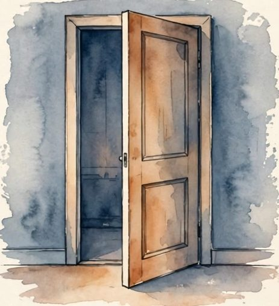
A door without a lock, standing ajar, evening light along its edge.
For the avoidance of all doubt, the keeper keeps a schedule by the door — arrivals, departures, the ordinary traffic of the house — and he invites you to inspect it. There are no hauntings on it. No haunting is scheduled: not for the anniversary of the great mistake, not for the birthday that ends in a zero, not for the night the house is finally sold or the year the mirror completes its long report. The guest does not do that work, and the house does not book that act. Whatever walks your corridors at three in the morning, it is not the future self. It is only the present self, tired and overdressed for the hour, carrying its own lantern into its own rooms.
The haunting story is persistent because it flatters the imagination in a dark way: it casts your life as a tragedy grand enough to generate ghosts. The keeper, who prefers accuracy to atmosphere, points out what a haunting would actually require of the guest — that they spend their own years performing resentment on a schedule, rattling the past like a chain for one frightened host. No guest this house has ever received has had any interest in the role. They are busy. They have a life — yours, continued — and haunting is not in it, any more than it is in yours, toward the tenants who occupied your years before you. When did you last haunt your younger self? You have not. You have only, at most, remembered them, with feeling. The guest will manage the same.
So sleep without a roster posted against the dark. If a memory crosses the corridor at night, greet it as what it is — a memory, yours, entitled to a hearing and to a chair, but not to the run of the house. The guest-room door stands open in this house because the guest is expected in the ordinary way, at the ordinary hour, by the road and the daylight. Apparitions are a literature, and the keeper keeps them where literature belongs: in books, on shelves, taken down for pleasure and put back without fear. The future is not coming to frighten you. It is coming to live here. Houses built for living do not need exorcisms; they need lamps, and the lamps are already lit.
77The Future Self Is Not a Verdict
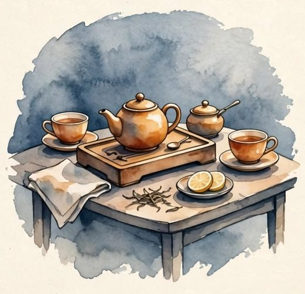
A tea tray set out on a small table, two cups waiting to be filled.
A verdict is a particular kind of sentence: final, sealed, delivered by an authority that does not stay for tea. The future self is none of those things, and this room exists to discharge the metaphor before it does any more quiet damage. The guest is not the conclusion of your story, arriving with the summary bound and the judgment printed; the guest is the story's next reader, and then its next author, and the story is not finished — will not be finished, on the day they arrive, or for years after. Nothing about them concludes you. They continue you, which is a different grammatical mood entirely: not the full stop, but the comma; not the gavel, but the next line of the letter.
The verdict fantasy usually smuggles in a courtroom's whole furniture: evidence, advocacy, the standard by which a life is to be measured and the scale of the sentence. The keeper has removed the furniture piece by piece over the years, and the room is better for the emptiness. In its place stands the table, and on the table a tea tray, set for the only transaction this hall recognizes: one person, later, telling another person, earlier, how it went — with all the digressions, qualifications, laughter and second thoughts that real telling involves. A verdict permits no second thoughts. A story is made of them. The guest brings a story, and stories can be argued with, amended, retold. That is why they are bearable, and verdicts are not.
So when the old fear stirs and dresses the guest in judicial robes, perform the small correction this house practices: picture the tea tray instead. Picture the guest arriving not to pronounce but to report, and arriving, moreover, in the middle of things — their own verdicts, if any are coming, as far off and as uncertain as yours. Nobody in this house is anybody's final judgment. The generations of a life sit in one another's chairs, drink one another's tea, and hand the story along with the sugar. The only sentence ever passed here is the sentence currently being written, by the person holding the pen. At the moment, that person is you. Write it kindly; the next author is reading over your shoulder, with sympathy and a cup in hand.
78Kindness Is the Whole Protocol
Every institution has its procedures, and the keeper, when pressed, will state this house's in one line: kindness is the whole protocol. Not the first item of the protocol, not the spirit in which the protocol's sterner items are carried out — the whole of it. There is no second document. Where other houses post their rules — standards, deadlines, the tariff of acceptable selves — this house keeps a kettle and a standing instruction to use it. This is not softness, and it is not a refusal to take the meeting seriously. It is the finding, arrived at over many arrivals, that nothing else in the building actually works: not the scorekeeping, not the staging, not the fear, each of which has been tried here, by earlier hosts, and each of which failed to improve a single visit.
Kindness, in the protocol's exact sense, is a discipline with specific duties, and they run in both directions along the years. Toward the guest: the kept house, the findable papers, the body rested like a room aired before a visit, the accounts settled or honestly named — kindness expressed as competence, which is the form the future can actually use. Toward the host, who is also covered by the protocol and often forgets it: the refusal to conduct preparations as punishment, to audit the past at midnight, to treat the present self as staff rather than as the first person the guest will ask after. The guest's opening question, in the keeper's long experience, is rarely about the estate. It is about whether you were all right, in the years when they were still on the road.
And toward the past selves, the protocol's third direction, kindness is memory without indictment: gratitude for the carrying, mercy for the errors, the simple acknowledgment that they did their watch with the light they had. It is a great deal to ask of one word, and the keeper knows it, and asks it anyway, because the alternative protocols have all been audited in this house and found to cost more than they pay. When in doubt — and the years guarantee doubt — consult the one line of procedure. Make the tea. Mend the chair. Write the kind letter, to whichever end of the life needs it. The protocol has never yet failed a host who actually followed it.
79The Guest Did Not Come to Grade You
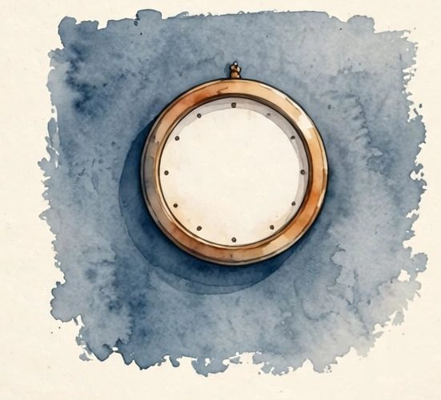
A wall clock without hands, its face calm and unhurried.
The keeper sometimes asks a new host a direct question: when the guest arrives, what do you imagine is in their hands? The answers are revealing — a report, a ribbon, a grade sheet trembling slightly. The house's answer is duller and better. Nothing. Their hands are empty, or carrying their bag. The guest did not come to grade you. Grading requires a standard fixed in advance, a margin for the marker's comments, and a result that gets recorded somewhere permanent; the guest has none of these, being a person arriving at a house, in weather, after a long road, with the entirely human priorities of the recently arrived: light, warmth, food, rest, news. Marks are not among the luggage. They never were.
Consider, as an experiment, the reverse itinerary. Somewhere behind you stands a past self whose house you now occupy — you arrived, years ago, at the door of the life they prepared. Did you grade them? You may have judged, in passing, in the way the young judge everything, including themselves; but a grade, a considered mark against a considered standard, sealed and recorded? You did not. You were too busy living in the rooms, using the tools, spending the inheritances, making your own weather. That is what arrivals do. The guest will be exactly as busy, and exactly as uninterested in the examiner's chair, which in any case this house does not own. The chair by the fire is for sitting in. Both chairs are.
So let the grade sheet go, with the scorebook and the verdict, into the keeper's small fire for such papers — he keeps it for exactly this purpose, and it has never gone cold for want of fuel. What replaces the grade is a conversation, and conversations, unlike examinations, cannot be failed. You can prepare for one the way you prepare for any guest whose opinion you actually value: by being honest in the letters, decent in the accounts, and present at the table when the hour comes. The clock on this hall's wall has no hands, a fact visitors puzzle over until they understand it. In a house where no one is being graded, the keeper explains, we have never needed to know exactly what time the judgment was. There is no judgment. There is tea at four.
80Fear Dressed as Foresight
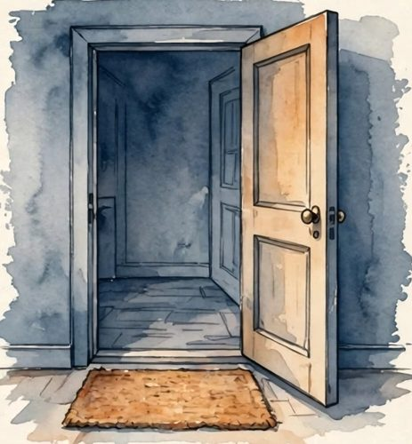
A welcome mat before an open door, brushed clean that morning.
The hall ends with a figure the keeper wants identified on sight, because it does more damage in this house than any honest fear: fear dressed as foresight. It arrives well-spoken and well-dressed, carrying charts; it calls itself realism; it advises, with great apparent wisdom, that the house be kept in a state of permanent low-grade alarm — every choice audited for catastrophe, every pleasure taxed with worry, the guest room maintained like a bunker against a guest who is treated, in every plan, as an inspector from a hostile ministry. The keeper listens politely, the way he listens to weather salesmen, and then he shows the visitor the door. Foresight is welcome in this house. Its costume is not.
The difference is not in the information — fear and foresight often look at the same facts — but in the temperature of the looking, and in what each of them builds. Foresight builds the estate: quietly, in season, at a pace the heart can sustain for decades, because it believes the future is a place someone loved will live. Fear builds a fortress and calls the building prudence; and a fortress, the keeper notes, is a house organized around an enemy, which means the guest arrives — as they eventually arrive, in every life — to find the welcome mat mined with expectations of disaster, and the host too exhausted by vigilance to enjoy the visit. Nothing in the record of this house suggests the future rewards that exhaustion. The future is not safer for having been dreaded accurately.
So learn the costume's tells. Foresight finishes its work and rests; fear dressed as foresight never rests, because rest would end the performance. Foresight speaks of the guest with affection; the costume speaks of them only as a risk to be managed. And foresight, when the evidence changes, changes its mind, while fear keeps the old alarm hanging in the new weather like a coat that no longer fits anyone. Keep the real thing — the house endorses foresight; it is half the reason the hall exists — and retire the costume to the wardrobe of the previous hall, where the other borrowed clothes hang. The guest is coming down a road, not out of a threat assessment. Sweep the mat. Open the door. That is what the mat is for, and it has been waiting, patiently, the whole time.
81The Fantasy Guest, Dismissed Politely
Every house that keeps a guest room eventually receives a visitor who was never invited: the fantasy guest. They arrive in the imagination fully finished, successful beyond argument, serene beyond weather, wearing a face that has forgotten every ordinary trouble and every unpaid bill. The keeper knows them at once, because they ask for nothing and admire nothing, and their perfection is the one quality no actual traveler has ever carried through a real doorway. They have come only to be compared with the person who actually lives here, and comparison is the one discourtesy this house does not practice at its own table.
The dismissal is polite because the fantasy is not wicked, only useless. It was stitched together from advertisements, other people's announcements, and the polished surfaces of strangers whose kitchens nobody here has ever seen. Measured against such a guest, any real life looks unfinished, and that is exactly the trick of it: the standard moves as you approach, keeping triumph permanently one room beyond reach. The keeper offers the fantasy a chair by the door, a glass of water, and no lodging whatsoever. What is invented to shame the present cannot be allowed to redecorate the future.
When the fantasy leaves, the room becomes honest again, and smaller, and kinder. The real guest who is actually coming will be interrupted, inconsistent, tender in unexpected places, and tired in the ordinary way that requires no apology. They will not need a palace prepared by anxiety or a stage set for an arrival that was always going to be human. They will need a bed, a lamp, and evidence that the person who lived here before them was not at war with their own unfinished state. The house returns to that quieter work with relief, folding the throw and trimming the wick.
82No Debt Collectors from the Future
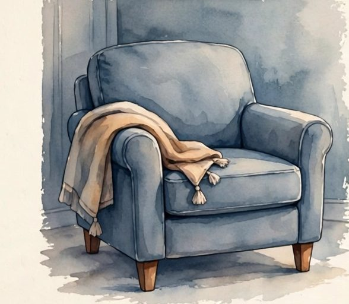
A soft armchair with a folded throw, waiting beside a low table in lamplight.
Some people furnish the future like a courthouse and staff it with collectors. Every pleasure taken today becomes an invoice; every rest becomes arrears; the guest approaching down the years is imagined carrying ledgers, tapping a pencil, preparing to demand payment for each unoptimized hour. The keeper has heard this fear described at the desk many times, always in lowered voices, and answers it the same way each time: no such appointment exists, and the house has never issued such a commission. The guest room holds no docket, no bailiff, no bill folded under the door.
This is not a promise that choices carry no weight, because they plainly do, and the house is built on respecting that weight rather than denying it. It is a refusal to turn weight into threat, consequence into terror. A debt collector wants fear to do the work of care, and fear is a slovenly housekeeper: it hides the papers, lets the roof leak, and spends the grocery money on locks and alarms. Care, by contrast, mends one thing at a time, names one obligation honestly, and sleeps at night with the window open.
So the house keeps its accounts the way a good host keeps a kitchen, in the open and without drama. What is owed is written down where it can be found, in plain figures, and what can be paid is paid in ordinary amounts at ordinary intervals. What cannot be paid yet is not disguised or deferred in secret; it is simply named and dated, without trembling. The guest who arrives will find records, not ambushes, and a host who spent the intervening years living rather than rehearsing a defense. That, the keeper says, is the whole difference.
83The Guest Asks for Tea, Not Accounts
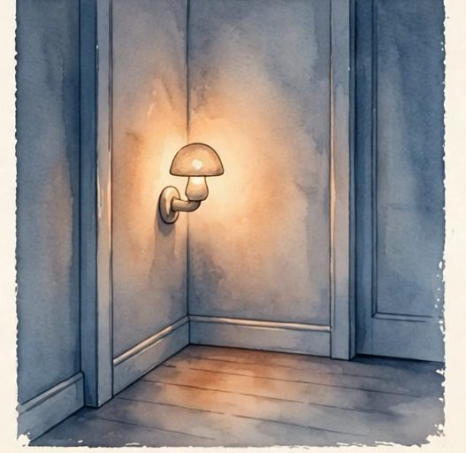
A small nightlight glowing in a hallway, its warm pool softening the dark wood.
Imagine the arrival as the house imagines it, without ceremony. The door opens on an ordinary evening. The guest is travel-worn in the way anyone is after a long stretch of years, and their first requests are embarrassingly small: somewhere to sit, something warm to drink, a little time before any large conversation. They do not ask for the accounts. They do not request a summary of achievements or a defense of the decades; they ask, in effect, for tea, and for the chair that still holds, and for ten quiet minutes before anything must be faced.
This smallness is not a lowering of the occasion; it is the occasion, understood correctly. A person who has lived your continuing life does not need it explained at the threshold. They were, in a manner of speaking, present for its making, the way you were present for the making of the person you now are. What they need on arrival is what any traveler needs: rest before reckoning, warmth before inventory, and the reassurance that the house is a home and not an audit, a place where a life is lived rather than graded.
Hosts who understand this stop rehearsing speeches and start attending to kettles. The questions that matter across the table will come later, and they will be gentler than feared, because nobody interrogates a life they have to go on living. The keeper keeps the tea things where they have always been kept, clean and within reach, as a small standing argument: hospitality is measured in warm cups offered promptly, not in explanations delivered at the door or histories laid out on the sideboard for inspection before the coat even comes off.
84Mercy, in Both Directions
The hall closes with the house's simplest rule, and its hardest: mercy, in both directions. Behind you stand the earlier selves who got you here with the tools they had, some of them embarrassingly blunt, all of them used in earnest. Ahead of you walks the one who will inherit whatever remains unfinished. No one lives inside a single day; the present is the corridor between the rooms of what was and what will be. The keeper observes that people are often merciless to both parties at once, scolding the past for its ignorance and billing the future for its rescue.
Mercy toward the past is not amnesia, and the house does not ask anyone to call old mistakes wise. It asks only for the recognition that the person who made them was working with a smaller map, a shorter night of sleep, and fears that have since gone quiet into ordinary memory. It does not ask you to erase the record, only to read it without raising your voice. Mercy toward the future is the same courtesy extended forward: an agreement not to demand that the arriving guest redeem every postponed intention, but to let them live their own portion of the life in peace.
Practiced together, the two mercies change the temperature of the whole house. Regret stops being a residence and becomes a room visited occasionally, with the window opened and closed again. Hope stops being a contract and becomes a lamp left burning without conditions. The person living between the two directions discovers they are easier to live with, which is not a small discovery, since they are the company kept every hour of the journey, in the kitchen and on the stairs, at the desk and in the garden, in sickness and in the plain seasons.
85The Road They Walk to Reach You
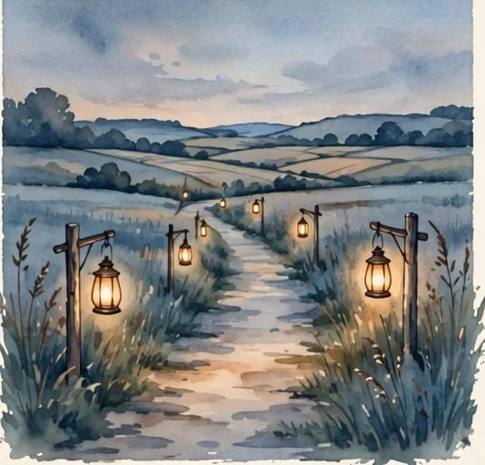
A path through fields at dusk, small lanterns spaced along its winding way.
The last hall of the journey turns outward, to the road itself. For the guest is not waiting in some finished country beyond the years; they are walking toward this house through ordinary time, one day at a time, at the pace days actually travel. The road they walk is made of your Tuesdays. It passes through weather you will not be able to describe in advance, towns whose names are not yet known, and long plain stretches where nothing appears to be happening at all, though the house knows better.
It helps, the keeper says, to picture the road honestly rather than grandly. There is no carriage, no shortcut, no sealed express route reserved for the especially deserving, and the house has never once issued a boarding pass. The guest walks the way you have always walked: through errands and illnesses and small celebrations, carrying bags that change contents over the years. Some of the bags were packed by you. The house's whole ethic of preparation can be restated as an attempt to pack them kindly and not too heavily, with room left for weather.
And the road runs in the present tense, which is the part hosts most often forget. The guest is not at the far end of it yet, but they are on it, nearer than they were last year, nearer than they were this morning. Every day lived is a length of road completed by both parties at once. To walk your own stretch attentively, neither dawdling in dread nor sprinting in fantasy, is already a form of greeting, offered early and often, like waving at a figure seen a long way off down the road.
86They Arrive in Installments
Stepping stones crossing a quiet stream, the water low and clear between them.
Nobody changes all at once, and neither does the guest. They arrive in installments, the way a house receives its furniture over years rather than in a single delivery. A preference shifts first, quietly, and is mistaken for a mood. A courage arrives next, unannounced, and is only recognized in retrospect. A grief recedes by degrees so small that the calendar cannot mark them. The keeper keeps a list by the desk of these partial arrivals, because the house learned long ago that becoming is a delivery schedule, not a doorbell.
This changes how a host waits. If the guest were coming in one dramatic moment, the only task would be readiness at that moment, and the years before it would be a corridor of suspense. Instead the years are the arrival itself, distributed. The person you are becoming is partly here already, in the new taste you have not explained, the old anger that no longer answers when called, the skill forming under your hands like a path forming under feet. To notice the installments is to be already in conversation with the guest.
It also removes the temptation to grade the delivery. An installment is neither the whole order nor a failure of it; it is simply what this season carried. Some seasons bring the large pieces, the changes visible from the street. Others bring only a lamp, a hinge, a small repaired thing. The house receives each with the same signature and the same thanks, trusting the larger order it cannot see in full. What matters is that the road is delivering, steadily, in both directions at once, and it has never yet missed an address it was honestly given.
87You Are Walking Toward Them Too
The road is usually described from the guest's side, as if the walking were all theirs. The house insists on the correction: you are walking toward them too, and your half of the distance is the only half you will ever be given to travel. Every day closes the gap from your side. Every habit kept or dropped moves the two figures closer together on the road, and the meeting, when it comes, will happen exactly where the two walks intersect, which is to say in an ordinary place on an ordinary morning.
This is why the house distrusts the posture of waiting. Waiting suggests a platform and a timetable, a person standing still while the years do the transporting. But nobody is transported. You are not cargo on your own life; you are the walker. The steps you take are not rehearsals for the journey, they are the journey, and the guest is measuring their road by the same plain arithmetic. To live a day carelessly is not to pause the approach. It is to spend a day of the approach carelessly, which is a different accounting.
There is comfort in the symmetry, once it settles. You do not have to cross the whole distance, because no one is asking you to. You cross your half, day by day, and the guest crosses theirs, and the middle of the road is reached by the simple accumulation of both efforts. Hosts who understand this stop scanning the horizon and attend to their own boots. The meeting is being arranged by the walking itself, and it has never once required a host to stand still and worry on a doorstep.
88The Meeting Is Not a Date but a Direction
A small bridge in morning mist, its far end softened by pale light.
Visitors often ask the keeper for the date, as if the meeting were an appointment that better planning could pin to a calendar square. The keeper answers with the house's geography: the meeting is not a date but a direction. You cannot schedule it, because it is not an event interrupting the life; it is the direction the life is pointed, the way a river is pointed at the sea without consulting any diary. What can be chosen is the heading. What cannot be chosen is a shortcut around the miles.
A date invites the wrong kind of preparation, all deadline and display, the frantic polishing that collapses the week after. A direction invites the right kind: the steady correction of course, repeated so often it becomes character. A ship does not reach harbor by celebrating the harbor; it reaches harbor by small adjustments of the wheel, made daily, in weather both fair and foul. The guest is approached the same way, by headings held kindly and often, rather than by milestones demanded in advance or arrival dates circled in red ink on a kitchen calendar.
So the house keeps no countdown on its walls and no calendar marked in red. It keeps a compass, which is a quieter instrument and a more honest one. Each evening the keeper asks the only question a direction permits: was today pointed, on balance, toward the person I am glad to be approaching. Some days the answer is a wince, and the wheel is adjusted without drama. Over years, the adjustments accumulate into a life that arrives somewhere its host can welcome without flinching or apology or quiet regret.
89Patience Is a Form of Hospitality
A signpost with blank signs at a crossroads, standing patient in the dusk.
Patience is usually filed under temperament, as if it were a quality some people are issued and others are not. The house files it elsewhere, under hospitality, where it belongs. To keep a room ready for years without complaint, to mend and sweep and restock for a guest whose arrival has no announced hour, is patience practiced as a craft. It is not the patience of the waiting room, which resents every minute. It is the patience of the innkeeper, who understands that readiness is itself the welcome, whether or not the door opens tonight.
Impatience, by contrast, makes a poor host in predictable ways. It demands the guest arrive early and calls the demand motivation. It ransacks the present for previews, interrogating every small change for news of the final shape, and it spoils good seasons by treating them as delays. The house has watched impatient hosts burn out by spring, their guest rooms converted to storage, their lamps sold. The road does not reward urgency. It simply continues, and the guest comes at the pace the road allows, which is the pace of days.
So patience here is not passivity dressed in a nicer coat. It is active, furnished, and lit. The patient host works, plans, and prepares, but holds the timetable loosely, the way one holds a bird: firmly enough not to lose it, gently enough not to harm it. Years pass without the door opening, and the room is swept anyway. That sweeping, repeated past all reason for applause, is how the house knows the welcome is real and not a performance staged for an audience of one impatient and hopeful host.
90The Years Between Are Not Empty
Between the host of today and the guest of later stretches a territory that pessimists call the wait and optimists call the journey. The house calls it the years between, and insists on the plain fact: they are not empty. They are where the entire life happens. The guest room is prepared in them, yes, but so is everything else: the work, the loves, the errors, the long friendships, the seasons that teach what no arrival could. To treat the interval as a corridor is to mislabel the house's largest rooms.
An empty interval could be endured, but a full one must be inhabited, and the difference changes a person's posture entirely. The host who believes the years are a corridor spends them facing the door. The host who knows they are the dwelling spends them at the table, in the garden, at the desk, living at full address. Only the second host has anything worth inheriting, because an estate is accumulated by living, not by anticipating, and the guest inherits the living or nothing at all. The guest will arrive into whatever fullness or vacancy the interval was given.
The keeper therefore guards the years between against the one theft that threatens them, which is deferral: the belief that real life begins after some threshold, some arrival, some permission. The guest, when they come, will not refund a single deferred year. They will simply live onward from what exists. So the house lives now, deliberately and without apology, furnishing the interval as richly as the destination. A road this well inhabited, the keeper remarks, is already a kind of meeting, held daily and without trumpets or ceremony of any kind.
The Guest Desk
One desk receives all correspondence for this house — questions, corrections, greetings, and word of any room you are keeping ready, any letter written forward, any kindness left where a later self will find it. It is read in the order it arrives.
91Weather on the Road
A resting bench beneath a large tree, its branches spread wide over the path.
No honest account of the road omits its weather. The guest will walk through seasons that no host can schedule or soften: winters of loss that arrive without asking permission, springs so generous they feel like compensation, long gray stretches of ordinary rain. The house does not pretend the weather is sent as instruction, nor that it can be argued with. Weather is simply what the road passes through, and the guest, like every traveler before them, will be rained on by years that were nobody's fault and nobody's design.
What the host can influence is smaller and realer than the sky. A person walking toward their future does so in a body whose condition was partly settled by earlier care, among friendships whose warmth was partly maintained on purpose, carrying habits that either leak energy or conserve it. Shelter, in other words, is built in advance or not at all. The house tends the roof and the stores in fair seasons precisely because it cannot command the foul ones, and it calls that tending by its true name: foresight without illusion.
The keeper keeps one further counsel about weather, learned from watching travelers arrive across many years. The guest who finally knocks will not be only the sum of their storms. People are marked by weather, certainly, but they are also marked by how often they found a fire lit at the end of a wet day. Remembering this, the host stops cursing forecasts and returns to the hearth. Somewhere down the road, the walking continues in whatever sky is given, and the lamp burns on either way, in patient welcome.
92Rest Stops Are Part of the Journey
A long road between low hills, hedgerows running quiet on either side.
Along every honest road there are benches, inns, and wide places in the hedge where a traveler is expected to stop, and the house is firm on the point: these are not interruptions of the journey. They are part of its design, as much as the milestones are. A road with no resting places would not produce faster arrivals. It would produce fewer arrivals, and those in worse repair. The guest walks a long way to reach this door, and the house intends them to arrive with strength left for living, not spent entirely on reaching.
Rest has a poor reputation among the ambitious, who file it under surrender and schedule it like an apology. The keeper files it under maintenance, next to the oiling of hinges and the sharpening of tools before winter. A rested traveler notices more, chooses better, and forgives faster, which is to say that rest is not time withdrawn from the journey but quality added to every mile that follows it. The host who rests now is, quite literally, building the rested house the guest will one day need to recover in.
So the house practices what the road teaches and makes its own rest stops deliberate: seasons taken at walking pace, evenings defended against encroachment, whole days in which nothing is optimized and nothing is proven. These are not rewards for finished work, since the work is never finished. They are stations, built into the route on purpose, where the person traveling toward their future self sits down, eats something warm, and remembers that the destination was never a deadline. The walking resumes by itself, refreshed and unhurried, in the morning.
93The Guest Walks at the Pace of Days
Ask how fast the guest is coming and the house gives an answer that disappoints the impatient: at the pace of days. Not at the pace of resolutions, which sprint and collapse, nor at the pace of dread, which imagines everything arriving at once. Days are the only currency the road accepts, and they are spent one at a time, in order, without bulk discounts. The guest who will one day sit at your table is currently separated from you by nothing more exotic than a number of ordinary sunrises.
This pace, which cannot be hurried, can at least be honored, and honoring it changes the texture of waiting. A day is small enough to be lived well and large enough to matter, which makes it exactly the right unit for the whole enterprise. The house does not ask its hosts to transform a decade by Friday. It asks them to walk today at a human speed, to eat and sleep and work inside the day's actual borders, and to let the accumulation do what accumulation does when nobody is shaking the tree.
There is also a mercy hidden in the pace, which the keeper points out to hosts who fear they have started too late. Because the guest walks at the pace of days, they cannot arrive before you have had your days to prepare, and they cannot be delayed past them either. The road is fair in a way few things are: everyone travels it at the same speed, one sunrise each, and nobody's shortcut has ever been found. What remains entirely yours is how the walking feels, and that is no small estate.
94Some Years the Road Is the Meeting
Footprints in fresh snow leading forward across an unmarked white field.
Some years produce no visible approach at all, and the house has a doctrine ready for them, because they come to everyone. The road does not shorten; the horizon does not move; the guest seems, if anything, more distant than in easier seasons. During such years the keeper advises hosts to reconsider what the road is for. If its only purpose were delivery, then a year without progress would be a year wasted. But some years, the road itself is the meeting place, and what happens on it is the entire substance of the acquaintance being formed.
Consider what is actually learned in a stalled year. The host discovers which of their comforts were scenery and which were structure. They learn the names of their own endurance, item by item, the way one learns a house by living in it through winter. And the guest, who is after all the same person continued, is being formed by precisely these miles and no others. Skip them, and you would not hasten the meeting. You would merely arrange to meet someone thinner, who had been spared the very weather that gives a face its character.
So the house refuses to strike such years from the record or to apologize for them in the guest book. They are entered plainly, with their weather noted and their lessons itemized without embroidery. When motion resumes, as it reliably does, the host finds the road has not been lost but deepened, and the walking feels different underfoot: slower to boast, quicker to understand. The keeper, closing the register on such a year, writes what the house has always believed. The journey was the address all along, and the guest its resident.
95Almost There Is a Real Place
A distant house with one lit window, seen across dark fields at dusk.
Almost there is a real place, though it appears on no map the house has ever been given. Travelers know it by its signs: the road begins to feel familiar, the light ahead resolves from a rumor into a window, and the remaining distance is finally measurable in evenings rather than in years. Hosts reach it too, usually without noticing the crossing. One day the preparations stop feeling like a project aimed at a stranger and start feeling like housekeeping for someone whose knock is genuinely expected, and that shift in feeling is the truest milestone on the road.
The house treats almost there with particular care, because it tempts hosts into two opposite errors. The first is to sprint, ransacking the remaining days in a final frenzy of improvement, as if the guest graded arrivals. The second is to relax entirely, letting the kettle go cold in the confidence that nearness is the same as arrival. Neither serves the guest. The right posture is the one the road has taught all along: keep walking, keep the lamp lit, and let the last stretch be lived at the same honest pace as the first.
And there is a sweetness to almost there that the earlier road cannot offer, which the keeper is unwilling to let hosts hurry past. From here, gratitude becomes specific. The host can begin to see what the years of walking have actually built, and to say so, plainly, in the guest book and aloud. The guest is close enough now that kindness sent forward travels a short road. Light the lamp a little earlier each evening. The distance that remains is real, and so is the nearness, and both deserve honesty.
96The Lamp They Walk Toward
The hall of the road ends where the road itself ends, with the lamp. Every long approach needs something visible to walk toward, and the house provides it without fanfare: one lamp, in one window, kept lit through the walking years. The guest does not navigate by grand beacons or burning ideals. They navigate the way travelers have always navigated, by a small steady light that says a particular house, on a particular hill, is awake and expecting someone, and that the someone is them, expected by their own name.
A lamp is a modest instrument, and its modesty is its virtue. It does not light the whole road, and pretending otherwise would be a cruelty to anyone walking in the dark. It lights enough: the last stretch, the gate, the steps to the door. The middle miles must be walked by other means, by memory and habit and the company of one's own thoughts. But a traveler who can see the end of the road walks the middle differently, with a steadiness that no amount of mid-road illumination could purchase.
For the host, the lamp is a discipline disguised as a decoration. To keep it lit is to renew, nightly, a decision that costs a little oil and a little attention and repays both in orientation. There will be evenings when keeping it feels foolish, when the road looks empty in every direction. The house lights it anyway, because faithfulness of that kind is not a prediction about the road. It is a statement about the house, and the house intends the statement to be true when the guest finally reads it.
97Step One: Set a Place at the Table
A single place setting being laid on a table, cloth and cutlery in quiet order.
The steps begin, as the house begins everything, at the table. The first step is to set a place: one plate, one cup, one chair drawn up in earnest for a guest who is not yet in the room. It sounds like a gesture, and it is, but it is the kind of gesture that reorganizes a house from the inside. A place set at the table declares that the future person is not an idea to be admired from a distance but a diner whose arrival the household has already begun to arrange itself around.
The step is sized deliberately small, because the house distrusts beginnings that require heroism. A place setting can be laid on the worst day of the year, by tired hands, without money, permission, or any ceremony of any formal kind. That is precisely its power as a first step: it converts the vast abstraction of the coming years into one honest physical act, performed at the scale of a tabletop, and it asks nothing of tomorrow except that the plate still be there, waiting, when the sitting down finally happens.
What quietly changes is the host's own seat. A person who eats across from a place set for their future self eats differently: a little more deliberately, with slightly better company in mind. The empty setting is not an accusation and never becomes one in this quiet house; it is a reminder that today's meal is also a preparation, eaten in the presence of someone whose hunger will be shaped by these very habits. Over years, the table teaches what lectures cannot. Hospitality begins as furniture, and becomes a character.
98Step Two: Write the First Letter
An envelope and a pen waiting on a table in the lamplight.
The second step is a letter, and the house is specific that it be the first one: short, plain, and written before the writer feels ready. A first letter is not expected to be wise. It is expected to exist. Its subject is modest by design: where things stand, what the weather of the present is honestly like, and one true sentence of greeting from the person currently holding the pen. Anything grander would be a performance, and the guest, of all readers, cannot be fooled by performances staged in their own handwriting.
The step is sized to fit an evening, and that is no accident. Houses that demand a memoir get silence; houses that ask for a page get a correspondence. The letter's smallness also protects its honesty, because a single page has no room for the writer's mythology. What remains when the page is limited is the actual news: work as it is, hopes as they are, fears named at their true size rather than their midnight size. Such a letter ages well, and can be read in later years without wincing.
What it quietly changes is the direction of the writer's attention. Until the first letter exists, the future self is an audience imagined vaguely, somewhere past the horizon. Once the envelope is sealed and dated, they become a correspondent: a specific person, addressed by name, who will open this in a specific later season. The house keeps every such letter unopened in a drawer by the desk. The correspondence has begun, and a correspondence, once begun, has a way of continuing itself across the years, season after patient season, without fail.
99Step Three: Mend One Thing in the House
The third step turns from the table to the house itself, and it is intentionally singular: mend one thing. Not the roof entire, not the renovation postponed for a decade, but one hinge, one rung, one tap that has dripped through two winters of good intentions. The house has learned that repair, like neglect, is a habit before it is a result. The person who mends one thing has crossed the only line that matters in a household, the line between describing the damage and answering it with their hands.
The size of the step is its argument. A single mended thing is too small to impress anyone, which frees it from performance, and large enough to change the evidence, which frees the host from despair. Each repair says the same sentence in a different material: this house is tended by somebody who lives here on purpose. The guest will read those sentences on arrival more fluently than any letter. A mended chair is a promise about the future that the present has already kept once, at small scale, in daylight.
What quietly changes is the host's relationship with everything else that is broken. After the first repair, the remaining damage stops looking like a verdict on the household and starts looking like a queue, orderly and finite, attended to one item at a season's pace. Years pass in this rhythm, and the house becomes, almost without announcement, a place where things get fixed. The guest who inherits such a house inherits the rhythm along with the walls, and finds the tools already warm and familiar in their own waiting hands.
100Step Four: Put One Paper in Order
A needle and thread mending a cloth, the stitches small and even.
The fourth step concerns paper, and the house asks for exactly one: a single document found, understood, and put where the right hands will reach it without searching. Every household has its drawer of consequential paper in cheerful disorder: the policies, the deeds, the instructions written for a day nobody wanted to picture. The step does not demand the drawer be conquered. It asks that one paper cross the border from the pile of the merely kept into the country of the genuinely findable, there to wait in good sense.
Its size is a kindness disguised as modesty. Paperwork frightens people out of all proportion to its actual weight, largely because it is contemplated in bulk, as an avalanche with a filing problem. One paper, however, can be read in a sitting, and reading it usually dissolves the fear attached to the rest. Knowledge of this kind compounds quietly: the host who knows what one document says begins, for the first time, to feel like the rightful author of the whole household rather than its bewildered and temporary overnight tenant.
What quietly changes is the story the house tells about emergencies. A single paper in order means that one future bad day has already been made measurably less chaotic, by a person sitting calmly in an ordinary afternoon. The guest, arriving in whatever season, will find the drawer slightly less of a thicket because of it. And the keeper notes the deeper yield: the host, having filed one paper honestly, has rehearsed being findable, a courtesy that extends well beyond paper, into every room of the life the guest will enter.
101Step Five: Learn One Thing They Will Need
One paper being filed into a drawer, a hand resting a moment on the handle.
The fifth step is an education of exactly one subject: learn one thing the guest will need. Not a curriculum, not a reinvention undertaken in a panic of self-improvement, but a single competence chosen with the guest's actual life in view. The house asks for this narrowness because it understands how learning really accumulates across a life: not in floods, but in one retained thing laid beside another retained thing, year after year, until the shelf of what the hands patiently know is quietly long, varied, honestly earned by slow practice.
Which thing hardly matters as much as hosts fear. A language begun badly, an instrument learned at walking pace, the practical mysteries of accounts or engines or bread: any of these will serve, because the guest's need is never only for the skill itself. They will need, far more, the acquaintance with how they learn, the memory of having been a beginner who survived it. That memory, once installed, transfers to every later beginning, including the difficult ones nobody chooses and the house cannot rehearse in advance or soften beforehand.
What quietly changes is the host's sense of the future's difficulty. A life in which one new thing is learned each season stops feeling like a country defended against change and starts feeling like a road walked with company. The guest inherits a person still in the practice of beginning, which is among the most useful inheritances the house knows of. Skills date; the willingness to be taught does not, and it is the willingness, more than any single subject, that this small step exists to deliver fully and safely intact.
102Step Six: Ask Them One Question
The sixth step reverses the usual direction of worry. Instead of preparing answers for the future, the host is asked to prepare one question for the guest: a single, genuine inquiry, written down and kept with the letters, to be answered in a season the host will not witness. The house insists on one question rather than twenty because a barrage is an interrogation, and this is a correspondence. One question, chosen slowly, tells the guest more about the asker than a questionnaire ever could, and invites an honesty that volume would frighten away.
The right question, the keeper observes, is never an audit. It does not ask whether the plans succeeded or the warnings were heeded, because those are questions about the host disguised as questions about the guest. It asks about the guest's own weather: what turned out to matter, what the view from there actually includes, what small thing the present is too close to see clearly. Such a question travels well across the years because it assumes nothing, and its assumption of nothing is a form of respect the guest will feel on arrival.
What quietly changes is the host's humility, exercised like a muscle. To write a question you cannot hear answered is to admit, in ink, that the future is not a report owed to you but a life lived by someone else, in first person. Hosts who have done this step worry differently afterward: less about outcomes, more about company. The sealed question waits in the drawer without anxiety, and the waiting itself becomes a small daily rehearsal for trusting the guest with everything else in the whole quiet old house.
103Step Seven: Forgive One Debt of the Past Self
A small plant being watered from a can, morning light falling on its leaves.
The seventh step looks backward, and it is the step hosts most often try to skip: forgive one debt of the past self. Every house keeps such a ledger, usually in the memory rather than on paper, where an earlier version of the person stands accused of a specific failure: the year wasted, the chance refused, the words said at the worst available moment. The step does not ask for the ledger to be burned. It asks for one entry to be settled in full, named precisely, and closed, so that the guest does not inherit a trial still in session.
The precision matters, because vague forgiveness forgives nothing. The past self must be met at the level of the actual entry: what was done, what it cost, what was genuinely beyond the person's power at the time, which is usually more than the prosecution admits. The keeper has noticed that most of these old defendants were younger, poorer in knowledge, and more frightened than their judges recall. Settling one such account honestly often reveals that the debt was smaller than its interest, and that the interest was being charged by the present, daily, at a ruinous rate.
What quietly changes is the temperature of the whole inheritance. A guest who arrives in a house where the past has been partly forgiven steps into a working demonstration that forgiveness is possible here, including, someday, for themselves. The step also frees an astonishing amount of the present's energy, which had been employed as a bailiff. One closed account will not empty the ledger, but it changes the ledger's meaning, from an indictment of the family to a record of debts that can, demonstrably, be paid and finished in full.
104Step Eight: Leave One Kindness Where They Will Find It
A candle being lit from another candle, the second flame just catching.
The eighth step is deliberately the smallest in the book: leave one kindness where the guest will find it. A note in a coat pocket. A tool cleaned and oiled beyond necessity. A favorite thing preserved without announcement, a sum of rest stored in the body like grain in a barn. The house does not specify the kindness, because specificity would spoil it: the point is that it be findable in a hard season and unmistakably intended, a message in material form from someone who was thinking of the finder before the finder existed as a worry.
Smallness here is not modesty but strategy. Large gestures toward the future tend to curdle into instructions, demands the guest must either obey or feel guilty beside. A small kindness asks nothing. It can be received in a single moment, in the middle of an ordinary bad week, and it does not require the guest to become anyone in particular to deserve it. The keeper compares it to leaving a lamp in a window rather than a lecture on the doorstep: it helps precisely because it only offers light, and lets the traveler decide the rest.
What quietly changes is the host's imagination of the guest's hardest days. It is easy to prepare for the guest's triumphs; every host secretly rehearses those. To leave a kindness is to admit, tenderly and without panic, that the road will include weather in which the guest is tired, discouraged, or simply in need of evidence that they were once thought of kindly by someone who knew the whole story. Such evidence, found at the right hour, has carried more weary travelers safely home than any map the house owns.
105Step Nine: Rest, So the House Is Rested
The ninth step is rest, and the house places it among the steps without apology, between the kindness and the promise, because rest is not what happens after the preparation. It is one of the preparations. The instruction, as the keeper phrases it, is to rest so the house is rested: to treat the host's own recovery as part of the estate being built, rather than as a private indulgence subtracted from it. A house kept by an exhausted keeper slowly becomes an exhausted house, in its corners first and then in its character.
The step is sized the way the others were sized, to be actually performable: one season taken at an honest pace, one evening defended, one night of sleep protected as deliberately as any appointment in the book. It does not demand a transformed life of leisure, which would be another fantasy guest in disguise. It asks for evidence, entered regularly in the register, that the person keeping this house believes their own strength is among the things worth keeping, and is willing to spend small amounts of ambition to maintain it.
What quietly changes is what the guest inherits in their own body and habits. They will arrive carrying the long consequences of how rest was treated in this house: whether it was rationed like a shameful medicine or served like a meal. The keeper has seen both inheritances and does not hesitate between them. A rested house teaches its guest, wordlessly, that they are allowed to stop, and a guest who knows they are allowed to stop can walk much farther than one who was only ever taught to continue.
The Guest Desk
One desk receives all correspondence for this house — questions, corrections, greetings, and word of any room you are keeping ready, any letter written forward, any kindness left where a later self will find it. It is read in the order it arrives.
106Step Ten: Keep One Small Promise
A gift box tied with string on a doorstep, waiting in the morning light.
The tenth step is a promise, and its defining feature is that it be small. The house has a deep suspicion of large promises made toward the future, having watched so many of them collapse under their own architecture and leave the promiser more cynical than before. A small promise, by contrast, can be kept on a tired day, in a bad season, without negotiation. Keep one such promise long enough and something structural changes: the promiser becomes, in their own records, a person whose word to the future is good, and that reputation, once earned, is self-keeping.
The step's smallness also protects the guest, which hosts rarely consider. A person who arrives in a house built on heroic vows inherits the vows as well, and heroic vows have a way of becoming the guest's debts, payable in guilt. A small promise kept imposes no such mortgage. It simply demonstrates, in the plainest evidence available, that commitments in this family can be sized to human strength and then honored completely. The guest receives a tradition they can actually continue, rather than a monument they can only fail to equal.
What quietly changes is the host's relationship with their own intentions. After a season of one promise kept daily, the register's language shifts: plans stop being announcements and become appointments. The keeper encourages hosts to choose the promise the way one chooses a stone for a pocket, small enough to carry everywhere, smooth enough not to chafe. Kept for years, such a promise becomes the load-bearing wall of the whole preparation, the quiet proof beneath every other step that the future can be trusted to a person who keeps their word.
107Step Eleven: Open the Guest Book
A lamp newly lit in a window at dusk, its glow steady against the blue.
The eleventh step opens the guest book, that plain volume kept by the door in which visitors to a house record that they were there. In this house the book has a stranger purpose, because its most faithful entries are written by the host, across the years, in the guest's anticipated name: dated notes of what the house was like, what was mended, what the season taught. Opening it is a step rather than a habit the house assumes, because the first opening takes a decision most hosts postpone indefinitely, the decision to begin the official record of the welcome.
A guest book changes a visit into a history. Without one, the years of preparation remain a rumor the host tells themselves, prone to exaggeration in both directions, despairing and grandiose by turns. With one, the evidence sits in ink by the door, cumulative and calm. The keeper values the book especially for bad seasons, when memory insists nothing has been done and the book, opened at random, contradicts it in the host's own handwriting. Records do not argue. They simply remain, which is sometimes exactly the encouragement a tired keeper needs.
What quietly changes is the status of the guest in the household's imagination. A person for whom a book is kept has been promoted from an idea to an expected member of the house, with a page reserved and a place in its chronicle. Future hosts of the same life, arriving in their turn, will read backward through these entries and find their own welcome already written. The book is how the house remembers forward, and the step of opening it, small as it seems, is the moment the preparation becomes a tradition.
108Step Twelve: Leave the Lamp On
The steps end where the house's footer begins: leave the lamp on. As a step it is the slightest of the twelve, a matter of oil and a wick and a moment at dusk, and the house places it last because it contains all the others in miniature. To leave a lamp burning for someone not yet arrived is to set the place, write the letter, mend the house, forgive the debt, and keep the promise, all translated into light. It is the whole doctrine with its coat off, performable every single evening, in any weather of the soul.
Its size is the final lesson of the staircase. Nothing in this step requires the host to know when the guest is coming, or to be worthy when they do, or even to be awake. The lamp does the welcoming on the host's behalf through the night hours, which is precisely the point: hospitality that depends on the host's constant vigilance is not hospitality but performance. A lamp left burning is a kindness that works while the keeper sleeps, and it asks of the future nothing except that it arrive eventually, in its own good time.
What quietly changes is the meaning of all the evenings before the arrival. Each lit lamp converts an ordinary dusk into a small act of faithfulness, and the accumulation of those dusks is, in the end, the biography of the house. When the guest finally comes up the road, they will not see one lamp. They will see, in the way travelers read such things, every lamp that was ever lit for them, burning as one continuous light. The steps are complete. The house is ready in the only way houses can be: habitually, and with love.
109The Long View from the Doorstep
A house at dawn with all its windows warm, the garden path below still in shadow.
The final hall opens on the doorstep, at the hour when the house can be seen whole. From here the keeper invites the host to take the long view: not a survey of achievements, which the house has never encouraged, but a simple standing-back, the way one steps off a path to let the garden show its shape. The long view is not an assessment. It is a change of distance, and most of what it reveals was invisible only because the viewer had been standing, for years, with their nose against the work.
What the long view shows first is proportion. The repairs that loomed so large in their seasons sit modestly among the years, no bigger than they need to be. The disasters that seemed terminal have been absorbed into the general fabric, visible as patches among many other patches. And the road, seen from the doorstep, is neither as long as dread promised nor as short as impatience demanded. It is exactly the length of a life being lived at the pace of days, which the keeper maintains is the only length any of this was ever going to be.
Standing here also changes who is doing the looking. The host who takes the long view is, for a moment, standing where the guest will stand, seeing the house as the arriving person will see it: from outside, at dawn, with its windows warm. That borrowed vantage is the hall's whole curriculum. A house seen from its own doorstep is no longer a list of tasks. It is a place, with a character and a history, and it can be loved as a place is loved, completely and without itemizing why.
110Every Host Was a Guest Once
A doorstep with two pairs of shoes, one worn smooth with use, one newer.
Every host was a guest once, and the house considers this the most useful fact in its possession. The person now keeping the guest room arrived here themselves, years ago, travel-worn from a road walked by earlier selves, and was received, or failed to be received, by whatever imperfect hospitality the house of that day could manage. Nothing in the present keeper's manner is original. It was all learned at a threshold, from hosts who were themselves only guests who had decided to stay a while and keep the fire.
This ancestry explains the house's mercies better than any rule could. A host who remembers being a guest does not grade arrivals, because they remember their own arrival and its condition. They remember which kindnesses landed with disproportionate weight on the worst evenings, and which lectures, however accurate, fell uselessly on tired shoulders. The guest book by the door is thick with such recollections, passed hand to hand like recipes, and the keeper reads them the way other houses read title deeds, as proof of what the family is actually made of.
It also means the line of hosts and guests is unbroken, and longer than anyone's memory of it. Behind today's host stands a procession of arrivals stretching back to a first morning when somebody, in some version of this house, put a kettle on for a person who was also themselves, only later. The guest now approaching joins that procession and will, in time, keep this same room for the next arrival. Hospitality, seen this way, is simply what the family does with its many thresholds, and has always done.
111The Past Self Sends Regards
Among the papers every house accumulates, the keeper sets a special value on one kind: the regards sent forward by past selves. They rarely arrive in grand form. A note in a margin. A tool bought well, once, that still serves. A friendship maintained through a thin decade by somebody who could not have said why it mattered. A body carried carefully out of a hard year by a person who received no thanks for it at the time, because the person who would owe the thanks had not arrived yet. The regards are quiet, and they are everywhere.
It is worth pausing, in this late hall, to acknowledge the correspondence honestly. The present host did not build this house from bare ground. They inherited it mid-repair, from keepers who were guessing as they went, and many of its best features were installed by those earlier hands in worse weather than today's. Gratitude in this house is not a sentiment; it is an accounting correction. The register that credits only the current keeper with the house's condition is simply wrong, and the keeper's own copy is annotated accordingly, in several handwritings.
The past self sends regards still, and not only in objects. Every habit of attention the host practices without thinking was taught by somebody earlier wearing the same name. The keeper suggests a reply, since a correspondence should be answered in kind: regards returned, in the form of mercy, and a promise entered plainly in the book that the present keeper will try to be, for the next arrival, the kind of earlier self who is easy to be grateful to. The line of thanks, like the line of hosting, runs unbroken through the house.
112A House Lived in Gently
An open door with morning light beyond it, the threshold worn smooth by years.
The house the guest inherits will not be new, and the keeper insists that this is among its chief virtues. A house lived in gently has a particular quality that no fresh construction can imitate: its hinges do not scream, its floors are worn along the routes of an actual life, and everything in it has been tested by use rather than preserved against it. Gentleness, practiced over years, is visible in a building the way kindness is visible in a face, as an ease that cannot be faked for visitors or installed over a single weekend.
Gentle living is a discipline in this house, though a quiet one. It means the rooms are used without being consumed, the tools kept without being worshipped, the days inhabited fully without being ransacked for proof of productivity. A hard-lived house, by contrast, shows its history as damage: everything forced, everything scarred, nothing rested, the keeper included. The guest reads both kinds of house in the first hour, fluently and without needing a tour. What they read at this address, the keeper hopes, is a long tenancy of care taken at ordinary pressure.
There is a final sense in which gentleness is practical rather than merely pleasant. A house used gently lasts, and so does its keeper, and the whole enterprise of preparing a welcome across decades depends on things lasting. The steps were sized small for this reason; the rest was scheduled for this reason; mercy runs in both directions for this reason. The guest is coming to a home, not a monument, and homes are kept by people who have learned the pressure at which things are best held: firmly, and without crushing.
113What the Meeting Changes Today
A table cleared and set for breakfast, early light lying across the cloth.
A fair question, kept for this late room, is what the meeting changes today, since the meeting itself is by definition elsewhere. The house's answer is that it changes almost everything except the schedule. The same work, the same errands, the same weather arrive as before, but they are met by a person with a direction, and direction quietly reorganizes the ordinary. A host preparing a welcome spends differently, forgives differently, and begins things differently, not because the future is watching, but because the present finally has a point of view to be lived from.
The changes are easiest to see in small negotiations. The expense declined because it would sit badly in the guest's inheritance; the appointment kept because the guest's household would need it kept; the harsh sentence revised before sending, out of consideration for who will one day read the old correspondence file. None of these require belief in anything exotic. They require only the habit of remembering that the consequences of today have a resident, and that the resident has a face the host is, by now, on speaking terms with.
Perhaps the deepest change is in the texture of an ordinary day itself. A day lived by a host is not split into the part that matters and the part that is merely passing time. Since the guest is arriving in installments, through exactly these days, none of them are corridor. The meeting, understood this way, is not a future event throwing a long shadow backward. It is a present arrangement, already in force, under which the kettle, the ledger, and the lamp have all been quietly promoted to significance.
114The Guest Is Coming, and So Are You
The hall of the long view has one sentence it keeps returning to, and it is written over the guest-room door in the keeper's plainest hand: the guest is coming, and so are you. Two journeys, one road, and the second clause matters as much as the first. Hosts who remember only the guest's approach tend to live like caretakers of an empty property, their own lives suspended in service of an arrival. The house corrects this wherever it finds it. You are not the house's staff. You are its current resident, and your journey is the main event of these years.
Both travelers, moreover, are changing as they walk, which is why the meeting cannot be scripted from either end. The host who set out years ago with a sharp picture of the guest has, by now, a softer and more accurate one, and the guest walking toward the house has been revising the host just as diligently. They will meet as strangers in some particulars and intimates in all the ones that matter. The keeper finds this not disappointing but relieving: a meeting that could be fully predicted would be a transaction, not a welcome.
So the house ends its teaching where it began, with the road under both pairs of feet. Keep walking; keep the lamp lit; do not confuse the two duties, and do not set either of them down. Somewhere ahead, the distance is closing at the pace of days, and it is being closed from both sides by people who are, unmistakably, glad of the arrangement. The keeper has their tea ready either way. What remains is only the walking, and the walking, by this point in the hall, has become its own reward.
115The Goal Is Not a Perfect Host
A garden in first light, dew standing bright on every leaf and path.
The house now states its goal in full, having spent ten halls earning the right to be believed about it. The goal is not a perfect host. It is not a house without a single chipped cup, a life arranged so impressively that the arriving guest will stand in the doorway applauding. Perfection of that kind is the fantasy guest returning in the host's clothing, and it produces the same results it always produces: anxiety in the present, and a welcome too stiff to sit down in. The house declines it, permanently and in writing.
Nor is the goal an impressive guest, which is the same error at the other end of the road. The person arriving will be whoever the years have honestly made, and this house does not grade its arrivals. What the goal actually is, the keeper says, can be said in one sentence and then spent a lifetime practicing: to live today in such a way that the person who arrives can thank you for it without lying. Not the thanks of politeness, which costs nothing and means it, but thanks that survives inspection, spoken by someone who knows the whole record.
Measured by that standard, almost everything rearranges itself. The question stops being whether today was flawless and becomes whether it was honest, survivable, and kindly meant toward the one who will live in its consequences. Some days will pass that test easily and some will need the mercy this house has practiced in both directions since the first hall. That is acceptable. The goal was never a certificate for the wall. It is a way of setting the table each morning so that gratitude, when it comes, can be sincere.
116The Door Is Not Locked
A key left in a door, on the inside, the lamplight warm around it.
There is one detail of the house that visitors sometimes question, and the keeper answers for it gladly: the guest-room door is not locked. It never has been. The house considered locks, in its early days, the way young households consider everything, as a form of seriousness, and then thought better of it. A locked door would turn the room into a vault and the guest into either a treasure or an intruder, and they are neither. They are family, arriving from a distance, and the house's whole posture toward them is an open threshold.
Trust, in a building, is mostly a matter of such small hardware decisions, repeated daily until they become the character of the place. The correspondence is not hidden from the guest; the ledger is not kept in code; the key, when there is a key, hangs by the door where any resident may take it down. The keeper is not naive about the world's disappointments, and the house has its ordinary prudence about strangers. But the guest is not a stranger in the relevant sense, and precautions taken against them would be precautions taken against the life itself.
What the unlatched door finally declares is the direction of the house's courage. It costs something to leave a door open across decades, to keep a room ready without controlling who exactly will walk into it or what they will think of it. The house pays that cost deliberately, every night, as its closing argument. Control was offered, in many forms and many seasons, and declined in favor of welcome. When the guest arrives and finds the door unlatched, they will understand the whole doctrine before a word is spoken.
117A Note from the Keeper of the Guest Room
On the desk in the guest room, where any arriving traveler will find it, the keeper leaves a note, renewed each season in a fair hand. It is not a long document, because the keeper distrusts long documents left for tired people, and it is not a wise one in the way of monuments. It says what the house has been saying for ten halls, in the plainest available words, for the benefit of the person who will read it standing up, with their bag still in their hand, in the first minute of arrival.
The note does not explain the house, because the house explains itself to anyone who lives in it for a day. It does not apologize for the repairs unfinished or the garden uncompleted, because apologies of that kind are a host's vanity, asking the guest to begin their residence with reassurance work. It does not list instructions, passwords, or warnings. The practical papers are in their drawer, in order, where the fourth step left them. This page has a narrower duty, and the keeper keeps it narrow on purpose, season after season.
It says only this. Welcome; the room has been kept; nothing here needs to be earned. The past keepers send their regards and ask for none of your strength in return. Make tea before you make plans, and forgive the house its patches, as it forgives yours in advance. The lamp will be lit for the next arrival, whoever we all turn out to be by then. Rest now. This house is yours, as it was always going to be, and it is glad, in its quiet way, to have you home. — The Keeper of the Guest Room.
118What This House Is, and Is Not
Two mugs side by side on a sill, steam rising from both in the cool air.
Before the hall closes, the house sets out its terms plainly, in the lamplight, where they can be read without squinting. This house is a concept page, made for reflection and entertainment only. It is not therapy, and it is not psychology; it offers no diagnosis and no treatment, and it is not a substitute for any of those things. It is likewise not financial advice, not medical advice, and not life advice in any professional sense. Anyone carrying a real burden of those kinds deserves real help, from real people, in rooms with doors that close.
The house also teaches no method, whatever its steps may have looked like from the road. The steps were furniture, not machinery: a way of arranging attention, not a technique with promised results. Nothing here is sold, and nothing here is promised. No outcome has been guaranteed, no future has been forecast, and no arrival will be graded against these pages. The keeper is a figure in an image, the desk is a figure in an image, and the welcome, while meant kindly, is extended by a page, which is to say by nobody with the power to keep a promise on the future's behalf.
As for the guest: the future self, in these rooms, is a metaphor, and the house asks that it be read as one. It names the person one's choices are preparing a life for, in the ordinary sense of years passing and a life continuing; it is not a claim about time, or about identity, or about any literal meeting that will one day take place. The guest room is an image too. What is not an image is the simple fact underneath them both, and it needs no house to be true: somebody will live in the consequences of today, and it will, in the usual way, be you.
119The Night Before They Arrive
The house seen from the road, its lamp still on at dawn, mist lying in the fields.
Every long preparation has a final evening, and the house has thought carefully about how it should be spent. Not in a last frenzy of improvement, because frenzy on the final evening confesses that the keeper never believed the doctrine of the small steps. Not in ceremony either, since ceremony is for beginnings and public occasions, and this arrival is neither. The night before the guest arrives is spent the way the house has spent its thousands of other evenings: supper at the usual hour, the book opened by the door, the lamp lit at dusk and trimmed without commentary.
The keeper does walk the rooms once, slowly, the way a person walks a garden before guests come, not to change anything but to see it whole. The place at the table is set. The letters are in their drawer, the papers in theirs, the chair mended or honestly unmended, the garden finished exactly as far as gardens ever are. There is a temptation to find this insufficient, and the keeper has prepared for that temptation too: it is the fantasy guest, making one last call, and it is shown, politely, to the door for the final time.
Then the house does the thing it has practiced above all others. It rests. The keeper sleeps the sleep of someone whose work is genuinely done to the extent that work of this kind can ever be done, which is to say done daily, in small pieces, at human pressure. Somewhere down the road the guest is sleeping too, or walking the last stretch under the same sky. The lamp burns in the window between them, doing its one job, and the night, which has carried this house through every season, carries it through this one as well.
120Welcome Home
The door opens, in the end, on an ordinary morning, and the first thing to be said about the arrival is how undramatic it is. No announcement has been made; no one has gathered; the kettle is simply on, as it has been on ten thousand other mornings. The guest steps up the path with the walk of someone who has covered a long way at the pace of days, and stands for a moment on the threshold, looking in at a house that is, at once, entirely new to them and impossible to mistake for anywhere else in the world.
And they are not a stranger. That is the discovery the whole house was built to hold. Their face is changed, as the halls promised it would be, and their tastes have traveled, and some of their certainties have quietly moved house, but the recognition underneath the changes is immediate and complete, the way one recognizes a voice on the stairs. The host does not introduce themselves. There is no need, and there never was. The place at the table is taken without ceremony, and the tea is poured, and the conversation begins in the middle, where all real conversations are already in progress.
So the hall ends with the house in its final and intended condition: occupied, ordinary, and warm. The guest book by the door gains one more entry, in a hand the keeper almost recognizes. The room that was kept so long is slept in at last, and keeping it was not the point, and also it was entirely the point. Somewhere down the years the procession continues, and a new arrival is already on the road. But that is another season's keeping. Tonight, in this house, the welcome is complete, and the lamp, faithful to the last, was left on.
The Guest Desk
One desk receives all correspondence for this house — questions, corrections, greetings, and word of any room you are keeping ready, any letter written forward, any kindness left where a later self will find it. It is read in the order it arrives.